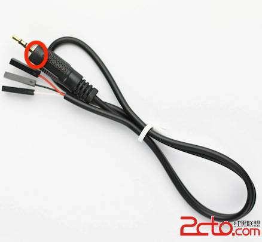

<en-note><div STYLE="position:relative;"><dd STYLE="margin-inline-start:;list-style-type:none;">
以下所有操作基于Ubuntu Linux下，所以基于Ubuntu、Debian等Linux版本均可使用。
<p STYLE="margin-block-start:;margin-block-end:;margin-top:0px;margin-bottom:8px;list-style-type:none;text-indent:28px;">一、以Root权限进行接下来的所有操作：</p>
<pre STYLE="font-family:&quot;Courier New&quot;,monospace;margin-block-start:;margin-block-end:;margin-top:0px;width:630px;overflow-x:auto;overflow-y:auto;padding-top:10px;padding-bottom:10px;"> $ sudo -s 
</pre>
<p STYLE="margin-block-start:;margin-block-end:;margin-top:0px;margin-bottom:8px;list-style-type:none;text-indent:28px;">二、安装编译osmocomBB所需的软件包：</p>
<pre STYLE="font-family:&quot;Courier New&quot;,monospace;margin-block-start:;margin-block-end:;margin-top:0px;width:630px;overflow-x:auto;overflow-y:auto;padding-top:10px;padding-bottom:10px;"> $ aptitude install libtool shtool autoconf git-core pkg-config make gcc
</pre>
<p STYLE="margin-block-start:;margin-block-end:;margin-top:0px;margin-bottom:8px;list-style-type:none;text-indent:28px;">三、下载所需要的GnuARM ToolChain</p>
<ul STYLE="list-style-type:none;margin-block-start:;margin-block-end:;padding-inline-start:;margin-top:0px;margin-bottom:0px;">
<li STYLE="list-style-type:none;">基于x86架构</li>
</ul>
<div STYLE="list-style-type:none;"><div STYLE="margin-top:14px;margin-bottom:14px;list-style-type:none;width:630px;position:relative;overflow-x:auto;overflow-y:auto;font-size:14px;background-color:rgb(255, 255, 255);"><div STYLE="list-style-type:none;background-color:rgb(108, 226, 108);border-top-color:rgb(255, 255, 255);border-bottom-color:rgb(255, 255, 255);bottom:34.2px;height:11px;left:618px;line-height:11px;outline-color:rgb(255, 255, 255);position:absolute;right:1px;text-align:left;top:1px;width:11px;font-family:&quot;Consolas&quot;,&quot;Bitstream Vera Sans Mono&quot;,&quot;Courier New&quot;,Courier,monospace;font-size:10px;z-index:10;color:rgb(255, 255, 255);"><span><a HREF="http://www.2cto.com/Article/201311/257701.html#" STYLE="color:rgb(255, 255, 255);text-decoration-color:rgb(255, 255, 255);text-decoration-line:none;border-top-color:rgb(255, 255, 255);border-bottom-color:rgb(255, 255, 255);height:11px;line-height:11px;outline-color:rgb(255, 255, 255);padding-top:1px;text-align:center;width:11px;font-family:&quot;Consolas&quot;,&quot;Bitstream Vera Sans Mono&quot;,&quot;Courier New&quot;,Courier,monospace;font-size:10px;display:block;">?</a></span></div><table CELLSPACING="0" CELLPADDING="0" BORDER="0" STYLE="border-spacing:0px 0px;box-sizing:content-box;list-style-type:none;border-top-color:rgb(51, 51, 51);border-bottom-color:rgb(51, 51, 51);height:46.2px;line-height:15.4px;outline-color:rgb(51, 51, 51);text-align:left;width:748px;font-family:&quot;Consolas&quot;,&quot;Bitstream Vera Sans Mono&quot;,&quot;Courier New&quot;,Courier,monospace;font-size:14px;"><tbody STYLE="vertical-align:baseline;border-top-color:rgb(51, 51, 51);border-bottom-color:rgb(51, 51, 51);height:46.2px;line-height:15.4px;outline-color:rgb(51, 51, 51);text-align:left;width:748px;font-family:&quot;Consolas&quot;,&quot;Bitstream Vera Sans Mono&quot;,&quot;Courier New&quot;,Courier,monospace;font-size:14px;"><tr STYLE="vertical-align:baseline;list-style-type:none;border-top-color:rgb(51, 51, 51);border-bottom-color:rgb(51, 51, 51);height:46.2px;line-height:15.4px;outline-color:rgb(51, 51, 51);text-align:left;width:748px;font-family:&quot;Consolas&quot;,&quot;Bitstream Vera Sans Mono&quot;,&quot;Courier New&quot;,Courier,monospace;font-size:14px;"><td STYLE="vertical-align:baseline;text-align:left;padding-top:0px;padding-bottom:0px;list-style-type:none;border-top-color:rgb(175, 175, 175);border-bottom-color:rgb(175, 175, 175);height:46.2px;line-height:15.4px;outline-color:rgb(175, 175, 175);width:32px;font-family:&quot;Consolas&quot;,&quot;Bitstream Vera Sans Mono&quot;,&quot;Courier New&quot;,Courier,monospace;font-size:14px;color:rgb(175, 175, 175);"><div STYLE="list-style-type:none;background-color:rgb(255, 255, 255);border-top-color:rgb(175, 175, 175);border-bottom-color:rgb(175, 175, 175);height:15.4px;line-height:15.4px;outline-color:rgb(175, 175, 175);text-align:right;width:8px;font-family:&quot;Consolas&quot;,&quot;Bitstream Vera Sans Mono&quot;,&quot;Courier New&quot;,Courier,monospace;font-size:14px;white-space:pre;">1</div><div STYLE="list-style-type:none;background-color:rgb(255, 255, 255);border-top-color:rgb(175, 175, 175);border-bottom-color:rgb(175, 175, 175);height:15.4px;line-height:15.4px;outline-color:rgb(175, 175, 175);text-align:right;width:8px;font-family:&quot;Consolas&quot;,&quot;Bitstream Vera Sans Mono&quot;,&quot;Courier New&quot;,Courier,monospace;font-size:14px;white-space:pre;">2</div><div STYLE="list-style-type:none;background-color:rgb(255, 255, 255);border-top-color:rgb(175, 175, 175);border-bottom-color:rgb(175, 175, 175);height:15.4px;line-height:15.4px;outline-color:rgb(175, 175, 175);text-align:right;width:8px;font-family:&quot;Consolas&quot;,&quot;Bitstream Vera Sans Mono&quot;,&quot;Courier New&quot;,Courier,monospace;font-size:14px;white-space:pre;">3</div></td><td STYLE="vertical-align:baseline;text-align:left;padding-top:0px;padding-bottom:0px;list-style-type:none;border-top-color:rgb(51, 51, 51);border-bottom-color:rgb(51, 51, 51);height:46.2px;line-height:15.4px;outline-color:rgb(51, 51, 51);width:716px;font-family:&quot;Consolas&quot;,&quot;Bitstream Vera Sans Mono&quot;,&quot;Courier New&quot;,Courier,monospace;font-size:14px;"><div STYLE="list-style-type:none;border-top-color:rgb(51, 51, 51);border-bottom-color:rgb(51, 51, 51);bottom:0px;height:46.2px;left:0px;line-height:15.4px;outline-color:rgb(51, 51, 51);position:relative;right:0px;text-align:left;top:0px;width:716px;font-family:&quot;Consolas&quot;,&quot;Bitstream Vera Sans Mono&quot;,&quot;Courier New&quot;,Courier,monospace;font-size:14px;"><div STYLE="list-style-type:none;background-color:rgb(255, 255, 255);border-top-color:rgb(51, 51, 51);border-bottom-color:rgb(51, 51, 51);height:15.4px;line-height:15.4px;outline-color:rgb(51, 51, 51);text-align:left;width:688px;font-family:&quot;Consolas&quot;,&quot;Bitstream Vera Sans Mono&quot;,&quot;Courier New&quot;,Courier,monospace;font-size:14px;white-space:pre;"><code STYLE="font-family:&quot;Consolas&quot;,&quot;Bitstream Vera Sans Mono&quot;,&quot;Courier New&quot;,Courier,monospace;line-height:15.4px;text-align:left;font-size:14px;">$ wget http:</code><code STYLE="font-family:&quot;Consolas&quot;,&quot;Bitstream Vera Sans Mono&quot;,&quot;Courier New&quot;,Courier,monospace;line-height:15.4px;text-align:left;font-size:14px;">//gnuarm</code><code STYLE="font-family:&quot;Consolas&quot;,&quot;Bitstream Vera Sans Mono&quot;,&quot;Courier New&quot;,Courier,monospace;line-height:15.4px;text-align:left;font-size:14px;">.com</code><code STYLE="font-family:&quot;Consolas&quot;,&quot;Bitstream Vera Sans Mono&quot;,&quot;Courier New&quot;,Courier,monospace;line-height:15.4px;text-align:left;font-size:14px;">/bu-2</code><code STYLE="font-family:&quot;Consolas&quot;,&quot;Bitstream Vera Sans Mono&quot;,&quot;Courier New&quot;,Courier,monospace;line-height:15.4px;text-align:left;font-size:14px;">.15_gcc-3.4.3-c-c++-java_nl-1.12.0_gi-6.1.</code><code STYLE="font-family:&quot;Consolas&quot;,&quot;Bitstream Vera Sans Mono&quot;,&quot;Courier New&quot;,Courier,monospace;border-top-color:rgb(255, 20, 147);border-bottom-color:rgb(255, 20, 147);line-height:15.4px;outline-color:rgb(255, 20, 147);text-align:left;font-size:14px;color:rgb(255, 20, 147);">tar</code><code STYLE="font-family:&quot;Consolas&quot;,&quot;Bitstream Vera Sans Mono&quot;,&quot;Courier New&quot;,Courier,monospace;line-height:15.4px;text-align:left;font-size:14px;">.bz2 百度网盘</code></div><div STYLE="list-style-type:none;background-color:rgb(255, 255, 255);border-top-color:rgb(51, 51, 51);border-bottom-color:rgb(51, 51, 51);height:15.4px;line-height:15.4px;outline-color:rgb(51, 51, 51);text-align:left;width:688px;font-family:&quot;Consolas&quot;,&quot;Bitstream Vera Sans Mono&quot;,&quot;Courier New&quot;,Courier,monospace;font-size:14px;white-space:pre;"><code STYLE="font-family:&quot;Consolas&quot;,&quot;Bitstream Vera Sans Mono&quot;,&quot;Courier New&quot;,Courier,monospace;line-height:15.4px;text-align:left;font-size:14px;">$ </code><code STYLE="font-family:&quot;Consolas&quot;,&quot;Bitstream Vera Sans Mono&quot;,&quot;Courier New&quot;,Courier,monospace;border-top-color:rgb(255, 20, 147);border-bottom-color:rgb(255, 20, 147);line-height:15.4px;outline-color:rgb(255, 20, 147);text-align:left;font-size:14px;color:rgb(255, 20, 147);">tar</code> <code STYLE="font-family:&quot;Consolas&quot;,&quot;Bitstream Vera Sans Mono&quot;,&quot;Courier New&quot;,Courier,monospace;line-height:15.4px;text-align:left;font-size:14px;">xf bu-2.15_gcc-3.4.3-c-c++-java_nl-1.12.0_gi-6.1.</code><code STYLE="font-family:&quot;Consolas&quot;,&quot;Bitstream Vera Sans Mono&quot;,&quot;Courier New&quot;,Courier,monospace;border-top-color:rgb(255, 20, 147);border-bottom-color:rgb(255, 20, 147);line-height:15.4px;outline-color:rgb(255, 20, 147);text-align:left;font-size:14px;color:rgb(255, 20, 147);">tar</code><code STYLE="font-family:&quot;Consolas&quot;,&quot;Bitstream Vera Sans Mono&quot;,&quot;Courier New&quot;,Courier,monospace;line-height:15.4px;text-align:left;font-size:14px;">.bz2</code></div><div STYLE="list-style-type:none;background-color:rgb(255, 255, 255);border-top-color:rgb(51, 51, 51);border-bottom-color:rgb(51, 51, 51);height:15.4px;line-height:15.4px;outline-color:rgb(51, 51, 51);text-align:left;width:688px;font-family:&quot;Consolas&quot;,&quot;Bitstream Vera Sans Mono&quot;,&quot;Courier New&quot;,Courier,monospace;font-size:14px;white-space:pre;"><code STYLE="font-family:&quot;Consolas&quot;,&quot;Bitstream Vera Sans Mono&quot;,&quot;Courier New&quot;,Courier,monospace;line-height:15.4px;text-align:left;font-size:14px;">$ </code><code STYLE="font-family:&quot;Consolas&quot;,&quot;Bitstream Vera Sans Mono&quot;,&quot;Courier New&quot;,Courier,monospace;border-top-color:rgb(255, 20, 147);border-bottom-color:rgb(255, 20, 147);line-height:15.4px;outline-color:rgb(255, 20, 147);text-align:left;font-size:14px;color:rgb(255, 20, 147);">mv</code> <code STYLE="font-family:&quot;Consolas&quot;,&quot;Bitstream Vera Sans Mono&quot;,&quot;Courier New&quot;,Courier,monospace;line-height:15.4px;text-align:left;font-size:14px;">gnuarm-* ~</code><code STYLE="font-family:&quot;Consolas&quot;,&quot;Bitstream Vera Sans Mono&quot;,&quot;Courier New&quot;,Courier,monospace;line-height:15.4px;text-align:left;font-size:14px;">/gnuarm</code></div></div></td></tr></tbody></table></div></div>
<ul STYLE="list-style-type:none;margin-block-start:;margin-block-end:;padding-inline-start:;margin-top:0px;margin-bottom:0px;">
<li STYLE="list-style-type:none;">基于64位架构</li>
</ul>
<div STYLE="list-style-type:none;"><div STYLE="margin-top:14px;margin-bottom:14px;list-style-type:none;width:630px;position:relative;overflow-x:auto;overflow-y:auto;font-size:14px;background-color:rgb(255, 255, 255);"><div STYLE="list-style-type:none;background-color:rgb(108, 226, 108);border-top-color:rgb(255, 255, 255);border-bottom-color:rgb(255, 255, 255);bottom:34.2px;height:11px;left:618px;line-height:11px;outline-color:rgb(255, 255, 255);position:absolute;right:1px;text-align:left;top:1px;width:11px;font-family:&quot;Consolas&quot;,&quot;Bitstream Vera Sans Mono&quot;,&quot;Courier New&quot;,Courier,monospace;font-size:10px;z-index:10;color:rgb(255, 255, 255);"><span><a HREF="http://www.2cto.com/Article/201311/257701.html#" STYLE="color:rgb(255, 255, 255);text-decoration-color:rgb(255, 255, 255);text-decoration-line:none;border-top-color:rgb(255, 255, 255);border-bottom-color:rgb(255, 255, 255);height:11px;line-height:11px;outline-color:rgb(255, 255, 255);padding-top:1px;text-align:center;width:11px;font-family:&quot;Consolas&quot;,&quot;Bitstream Vera Sans Mono&quot;,&quot;Courier New&quot;,Courier,monospace;font-size:10px;display:block;">?</a></span></div><table CELLSPACING="0" CELLPADDING="0" BORDER="0" STYLE="border-spacing:0px 0px;box-sizing:content-box;list-style-type:none;border-top-color:rgb(51, 51, 51);border-bottom-color:rgb(51, 51, 51);height:46.2px;line-height:15.4px;outline-color:rgb(51, 51, 51);text-align:left;width:812px;font-family:&quot;Consolas&quot;,&quot;Bitstream Vera Sans Mono&quot;,&quot;Courier New&quot;,Courier,monospace;font-size:14px;"><tbody STYLE="vertical-align:baseline;border-top-color:rgb(51, 51, 51);border-bottom-color:rgb(51, 51, 51);height:46.2px;line-height:15.4px;outline-color:rgb(51, 51, 51);text-align:left;width:812px;font-family:&quot;Consolas&quot;,&quot;Bitstream Vera Sans Mono&quot;,&quot;Courier New&quot;,Courier,monospace;font-size:14px;"><tr STYLE="vertical-align:baseline;list-style-type:none;border-top-color:rgb(51, 51, 51);border-bottom-color:rgb(51, 51, 51);height:46.2px;line-height:15.4px;outline-color:rgb(51, 51, 51);text-align:left;width:812px;font-family:&quot;Consolas&quot;,&quot;Bitstream Vera Sans Mono&quot;,&quot;Courier New&quot;,Courier,monospace;font-size:14px;"><td STYLE="vertical-align:baseline;text-align:left;padding-top:0px;padding-bottom:0px;list-style-type:none;border-top-color:rgb(175, 175, 175);border-bottom-color:rgb(175, 175, 175);height:46.2px;line-height:15.4px;outline-color:rgb(175, 175, 175);width:32px;font-family:&quot;Consolas&quot;,&quot;Bitstream Vera Sans Mono&quot;,&quot;Courier New&quot;,Courier,monospace;font-size:14px;color:rgb(175, 175, 175);"><div STYLE="list-style-type:none;background-color:rgb(255, 255, 255);border-top-color:rgb(175, 175, 175);border-bottom-color:rgb(175, 175, 175);height:15.4px;line-height:15.4px;outline-color:rgb(175, 175, 175);text-align:right;width:8px;font-family:&quot;Consolas&quot;,&quot;Bitstream Vera Sans Mono&quot;,&quot;Courier New&quot;,Courier,monospace;font-size:14px;white-space:pre;">1</div><div STYLE="list-style-type:none;background-color:rgb(255, 255, 255);border-top-color:rgb(175, 175, 175);border-bottom-color:rgb(175, 175, 175);height:15.4px;line-height:15.4px;outline-color:rgb(175, 175, 175);text-align:right;width:8px;font-family:&quot;Consolas&quot;,&quot;Bitstream Vera Sans Mono&quot;,&quot;Courier New&quot;,Courier,monospace;font-size:14px;white-space:pre;">2</div><div STYLE="list-style-type:none;background-color:rgb(255, 255, 255);border-top-color:rgb(175, 175, 175);border-bottom-color:rgb(175, 175, 175);height:15.4px;line-height:15.4px;outline-color:rgb(175, 175, 175);text-align:right;width:8px;font-family:&quot;Consolas&quot;,&quot;Bitstream Vera Sans Mono&quot;,&quot;Courier New&quot;,Courier,monospace;font-size:14px;white-space:pre;">3</div></td><td STYLE="vertical-align:baseline;text-align:left;padding-top:0px;padding-bottom:0px;list-style-type:none;border-top-color:rgb(51, 51, 51);border-bottom-color:rgb(51, 51, 51);height:46.2px;line-height:15.4px;outline-color:rgb(51, 51, 51);width:780px;font-family:&quot;Consolas&quot;,&quot;Bitstream Vera Sans Mono&quot;,&quot;Courier New&quot;,Courier,monospace;font-size:14px;"><div STYLE="list-style-type:none;border-top-color:rgb(51, 51, 51);border-bottom-color:rgb(51, 51, 51);bottom:0px;height:46.2px;left:0px;line-height:15.4px;outline-color:rgb(51, 51, 51);position:relative;right:0px;text-align:left;top:0px;width:780px;font-family:&quot;Consolas&quot;,&quot;Bitstream Vera Sans Mono&quot;,&quot;Courier New&quot;,Courier,monospace;font-size:14px;"><div STYLE="list-style-type:none;background-color:rgb(255, 255, 255);border-top-color:rgb(51, 51, 51);border-bottom-color:rgb(51, 51, 51);height:15.4px;line-height:15.4px;outline-color:rgb(51, 51, 51);text-align:left;width:752px;font-family:&quot;Consolas&quot;,&quot;Bitstream Vera Sans Mono&quot;,&quot;Courier New&quot;,Courier,monospace;font-size:14px;white-space:pre;"><code STYLE="font-family:&quot;Consolas&quot;,&quot;Bitstream Vera Sans Mono&quot;,&quot;Courier New&quot;,Courier,monospace;line-height:15.4px;text-align:left;font-size:14px;">$ wget http:</code><code STYLE="font-family:&quot;Consolas&quot;,&quot;Bitstream Vera Sans Mono&quot;,&quot;Courier New&quot;,Courier,monospace;line-height:15.4px;text-align:left;font-size:14px;">//www</code><code STYLE="font-family:&quot;Consolas&quot;,&quot;Bitstream Vera Sans Mono&quot;,&quot;Courier New&quot;,Courier,monospace;line-height:15.4px;text-align:left;font-size:14px;">.gnuarm.com</code><code STYLE="font-family:&quot;Consolas&quot;,&quot;Bitstream Vera Sans Mono&quot;,&quot;Courier New&quot;,Courier,monospace;line-height:15.4px;text-align:left;font-size:14px;">/bu-2</code><code STYLE="font-family:&quot;Consolas&quot;,&quot;Bitstream Vera Sans Mono&quot;,&quot;Courier New&quot;,Courier,monospace;line-height:15.4px;text-align:left;font-size:14px;">.16.1_gcc-4.0.2-c-c++_nl-1.14.0_gi-6.4_x86-64.</code><code STYLE="font-family:&quot;Consolas&quot;,&quot;Bitstream Vera Sans Mono&quot;,&quot;Courier New&quot;,Courier,monospace;border-top-color:rgb(255, 20, 147);border-bottom-color:rgb(255, 20, 147);line-height:15.4px;outline-color:rgb(255, 20, 147);text-align:left;font-size:14px;color:rgb(255, 20, 147);">tar</code><code STYLE="font-family:&quot;Consolas&quot;,&quot;Bitstream Vera Sans Mono&quot;,&quot;Courier New&quot;,Courier,monospace;line-height:15.4px;text-align:left;font-size:14px;">.bz2 百度网盘</code></div><div STYLE="list-style-type:none;background-color:rgb(255, 255, 255);border-top-color:rgb(51, 51, 51);border-bottom-color:rgb(51, 51, 51);height:15.4px;line-height:15.4px;outline-color:rgb(51, 51, 51);text-align:left;width:752px;font-family:&quot;Consolas&quot;,&quot;Bitstream Vera Sans Mono&quot;,&quot;Courier New&quot;,Courier,monospace;font-size:14px;white-space:pre;"><code STYLE="font-family:&quot;Consolas&quot;,&quot;Bitstream Vera Sans Mono&quot;,&quot;Courier New&quot;,Courier,monospace;line-height:15.4px;text-align:left;font-size:14px;">$ </code><code STYLE="font-family:&quot;Consolas&quot;,&quot;Bitstream Vera Sans Mono&quot;,&quot;Courier New&quot;,Courier,monospace;border-top-color:rgb(255, 20, 147);border-bottom-color:rgb(255, 20, 147);line-height:15.4px;outline-color:rgb(255, 20, 147);text-align:left;font-size:14px;color:rgb(255, 20, 147);">tar</code> <code STYLE="font-family:&quot;Consolas&quot;,&quot;Bitstream Vera Sans Mono&quot;,&quot;Courier New&quot;,Courier,monospace;line-height:15.4px;text-align:left;font-size:14px;">xf bu-2.16.1_gcc-4.0.2-c-c++_nl-1.14.0_gi-6.4_x86-64.</code><code STYLE="font-family:&quot;Consolas&quot;,&quot;Bitstream Vera Sans Mono&quot;,&quot;Courier New&quot;,Courier,monospace;border-top-color:rgb(255, 20, 147);border-bottom-color:rgb(255, 20, 147);line-height:15.4px;outline-color:rgb(255, 20, 147);text-align:left;font-size:14px;color:rgb(255, 20, 147);">tar</code><code STYLE="font-family:&quot;Consolas&quot;,&quot;Bitstream Vera Sans Mono&quot;,&quot;Courier New&quot;,Courier,monospace;line-height:15.4px;text-align:left;font-size:14px;">.bz2</code></div><div STYLE="list-style-type:none;background-color:rgb(255, 255, 255);border-top-color:rgb(51, 51, 51);border-bottom-color:rgb(51, 51, 51);height:15.4px;line-height:15.4px;outline-color:rgb(51, 51, 51);text-align:left;width:752px;font-family:&quot;Consolas&quot;,&quot;Bitstream Vera Sans Mono&quot;,&quot;Courier New&quot;,Courier,monospace;font-size:14px;white-space:pre;"><code STYLE="font-family:&quot;Consolas&quot;,&quot;Bitstream Vera Sans Mono&quot;,&quot;Courier New&quot;,Courier,monospace;line-height:15.4px;text-align:left;font-size:14px;">$ </code><code STYLE="font-family:&quot;Consolas&quot;,&quot;Bitstream Vera Sans Mono&quot;,&quot;Courier New&quot;,Courier,monospace;border-top-color:rgb(255, 20, 147);border-bottom-color:rgb(255, 20, 147);line-height:15.4px;outline-color:rgb(255, 20, 147);text-align:left;font-size:14px;color:rgb(255, 20, 147);">mv</code> <code STYLE="font-family:&quot;Consolas&quot;,&quot;Bitstream Vera Sans Mono&quot;,&quot;Courier New&quot;,Courier,monospace;line-height:15.4px;text-align:left;font-size:14px;">gnuarm-* ~</code><code STYLE="font-family:&quot;Consolas&quot;,&quot;Bitstream Vera Sans Mono&quot;,&quot;Courier New&quot;,Courier,monospace;line-height:15.4px;text-align:left;font-size:14px;">/gnuarm</code></div></div></td></tr></tbody></table></div></div>
<p STYLE="margin-block-start:;margin-block-end:;margin-top:0px;margin-bottom:8px;list-style-type:none;text-indent:28px;">这样子就已经完成了关于OsmocomBB的交叉编译环境的搭建，剩下就是最关键的设置环境变量</p>
<pre STYLE="font-family:&quot;Courier New&quot;,monospace;margin-block-start:;margin-block-end:;margin-top:0px;width:630px;overflow-x:auto;overflow-y:auto;padding-top:10px;padding-bottom:10px;"> $ export PATH=~/gnuarm/bin:$PATH
</pre>
<p STYLE="margin-block-start:;margin-block-end:;margin-top:0px;margin-bottom:8px;list-style-type:none;text-indent:28px;">建议是直接编辑~/.bashrc的内容，把上面的这个段话直接加到最后。</p>
<p STYLE="margin-block-start:;margin-block-end:;margin-top:0px;margin-bottom:8px;list-style-type:none;text-indent:28px;"><div></div>
四、编译libosmocore：</p>
<div STYLE="list-style-type:none;"><div STYLE="margin-top:14px;margin-bottom:14px;list-style-type:none;width:630px;position:relative;overflow-x:auto;overflow-y:auto;font-size:14px;background-color:rgb(255, 255, 255);"><div STYLE="list-style-type:none;background-color:rgb(108, 226, 108);border-top-color:rgb(255, 255, 255);border-bottom-color:rgb(255, 255, 255);bottom:111.2px;height:11px;left:618px;line-height:11px;outline-color:rgb(255, 255, 255);position:absolute;right:1px;text-align:left;top:1px;width:11px;font-family:&quot;Consolas&quot;,&quot;Bitstream Vera Sans Mono&quot;,&quot;Courier New&quot;,Courier,monospace;font-size:10px;z-index:10;color:rgb(255, 255, 255);"><span><a HREF="http://www.2cto.com/Article/201311/257701.html#" STYLE="color:rgb(255, 255, 255);text-decoration-color:rgb(255, 255, 255);text-decoration-line:none;border-top-color:rgb(255, 255, 255);border-bottom-color:rgb(255, 255, 255);height:11px;line-height:11px;outline-color:rgb(255, 255, 255);padding-top:1px;text-align:center;width:11px;font-family:&quot;Consolas&quot;,&quot;Bitstream Vera Sans Mono&quot;,&quot;Courier New&quot;,Courier,monospace;font-size:10px;display:block;">?</a></span></div><table CELLSPACING="0" CELLPADDING="0" BORDER="0" STYLE="border-spacing:0px 0px;box-sizing:content-box;list-style-type:none;border-top-color:rgb(51, 51, 51);border-bottom-color:rgb(51, 51, 51);height:123.2px;line-height:15.4px;outline-color:rgb(51, 51, 51);text-align:left;width:630px;font-family:&quot;Consolas&quot;,&quot;Bitstream Vera Sans Mono&quot;,&quot;Courier New&quot;,Courier,monospace;font-size:14px;"><tbody STYLE="vertical-align:baseline;border-top-color:rgb(51, 51, 51);border-bottom-color:rgb(51, 51, 51);height:123.2px;line-height:15.4px;outline-color:rgb(51, 51, 51);text-align:left;width:630px;font-family:&quot;Consolas&quot;,&quot;Bitstream Vera Sans Mono&quot;,&quot;Courier New&quot;,Courier,monospace;font-size:14px;"><tr STYLE="vertical-align:baseline;list-style-type:none;border-top-color:rgb(51, 51, 51);border-bottom-color:rgb(51, 51, 51);height:123.2px;line-height:15.4px;outline-color:rgb(51, 51, 51);text-align:left;width:630px;font-family:&quot;Consolas&quot;,&quot;Bitstream Vera Sans Mono&quot;,&quot;Courier New&quot;,Courier,monospace;font-size:14px;"><td STYLE="vertical-align:baseline;text-align:left;padding-top:0px;padding-bottom:0px;list-style-type:none;border-top-color:rgb(175, 175, 175);border-bottom-color:rgb(175, 175, 175);height:123.2px;line-height:15.4px;outline-color:rgb(175, 175, 175);width:32px;font-family:&quot;Consolas&quot;,&quot;Bitstream Vera Sans Mono&quot;,&quot;Courier New&quot;,Courier,monospace;font-size:14px;color:rgb(175, 175, 175);"><div STYLE="list-style-type:none;background-color:rgb(255, 255, 255);border-top-color:rgb(175, 175, 175);border-bottom-color:rgb(175, 175, 175);height:15.4px;line-height:15.4px;outline-color:rgb(175, 175, 175);text-align:right;width:8px;font-family:&quot;Consolas&quot;,&quot;Bitstream Vera Sans Mono&quot;,&quot;Courier New&quot;,Courier,monospace;font-size:14px;white-space:pre;">1</div><div STYLE="list-style-type:none;background-color:rgb(255, 255, 255);border-top-color:rgb(175, 175, 175);border-bottom-color:rgb(175, 175, 175);height:15.4px;line-height:15.4px;outline-color:rgb(175, 175, 175);text-align:right;width:8px;font-family:&quot;Consolas&quot;,&quot;Bitstream Vera Sans Mono&quot;,&quot;Courier New&quot;,Courier,monospace;font-size:14px;white-space:pre;">2</div><div STYLE="list-style-type:none;background-color:rgb(255, 255, 255);border-top-color:rgb(175, 175, 175);border-bottom-color:rgb(175, 175, 175);height:15.4px;line-height:15.4px;outline-color:rgb(175, 175, 175);text-align:right;width:8px;font-family:&quot;Consolas&quot;,&quot;Bitstream Vera Sans Mono&quot;,&quot;Courier New&quot;,Courier,monospace;font-size:14px;white-space:pre;">3</div><div STYLE="list-style-type:none;background-color:rgb(255, 255, 255);border-top-color:rgb(175, 175, 175);border-bottom-color:rgb(175, 175, 175);height:15.4px;line-height:15.4px;outline-color:rgb(175, 175, 175);text-align:right;width:8px;font-family:&quot;Consolas&quot;,&quot;Bitstream Vera Sans Mono&quot;,&quot;Courier New&quot;,Courier,monospace;font-size:14px;white-space:pre;">4</div><div STYLE="list-style-type:none;background-color:rgb(255, 255, 255);border-top-color:rgb(175, 175, 175);border-bottom-color:rgb(175, 175, 175);height:15.4px;line-height:15.4px;outline-color:rgb(175, 175, 175);text-align:right;width:8px;font-family:&quot;Consolas&quot;,&quot;Bitstream Vera Sans Mono&quot;,&quot;Courier New&quot;,Courier,monospace;font-size:14px;white-space:pre;">5</div><div STYLE="list-style-type:none;background-color:rgb(255, 255, 255);border-top-color:rgb(175, 175, 175);border-bottom-color:rgb(175, 175, 175);height:15.4px;line-height:15.4px;outline-color:rgb(175, 175, 175);text-align:right;width:8px;font-family:&quot;Consolas&quot;,&quot;Bitstream Vera Sans Mono&quot;,&quot;Courier New&quot;,Courier,monospace;font-size:14px;white-space:pre;">6</div><div STYLE="list-style-type:none;background-color:rgb(255, 255, 255);border-top-color:rgb(175, 175, 175);border-bottom-color:rgb(175, 175, 175);height:15.4px;line-height:15.4px;outline-color:rgb(175, 175, 175);text-align:right;width:8px;font-family:&quot;Consolas&quot;,&quot;Bitstream Vera Sans Mono&quot;,&quot;Courier New&quot;,Courier,monospace;font-size:14px;white-space:pre;">7</div><div STYLE="list-style-type:none;background-color:rgb(255, 255, 255);border-top-color:rgb(175, 175, 175);border-bottom-color:rgb(175, 175, 175);height:15.4px;line-height:15.4px;outline-color:rgb(175, 175, 175);text-align:right;width:8px;font-family:&quot;Consolas&quot;,&quot;Bitstream Vera Sans Mono&quot;,&quot;Courier New&quot;,Courier,monospace;font-size:14px;white-space:pre;">8</div></td><td STYLE="vertical-align:baseline;text-align:left;padding-top:0px;padding-bottom:0px;list-style-type:none;border-top-color:rgb(51, 51, 51);border-bottom-color:rgb(51, 51, 51);height:123.2px;line-height:15.4px;outline-color:rgb(51, 51, 51);width:598px;font-family:&quot;Consolas&quot;,&quot;Bitstream Vera Sans Mono&quot;,&quot;Courier New&quot;,Courier,monospace;font-size:14px;"><div STYLE="list-style-type:none;border-top-color:rgb(51, 51, 51);border-bottom-color:rgb(51, 51, 51);bottom:0px;height:123.2px;left:0px;line-height:15.4px;outline-color:rgb(51, 51, 51);position:relative;right:0px;text-align:left;top:0px;width:598px;font-family:&quot;Consolas&quot;,&quot;Bitstream Vera Sans Mono&quot;,&quot;Courier New&quot;,Courier,monospace;font-size:14px;"><div STYLE="list-style-type:none;background-color:rgb(255, 255, 255);border-top-color:rgb(51, 51, 51);border-bottom-color:rgb(51, 51, 51);height:15.4px;line-height:15.4px;outline-color:rgb(51, 51, 51);text-align:left;width:570px;font-family:&quot;Consolas&quot;,&quot;Bitstream Vera Sans Mono&quot;,&quot;Courier New&quot;,Courier,monospace;font-size:14px;white-space:pre;"><code STYLE="font-family:&quot;Consolas&quot;,&quot;Bitstream Vera Sans Mono&quot;,&quot;Courier New&quot;,Courier,monospace;line-height:15.4px;text-align:left;font-size:14px;">$ git clone git:</code><code STYLE="font-family:&quot;Consolas&quot;,&quot;Bitstream Vera Sans Mono&quot;,&quot;Courier New&quot;,Courier,monospace;line-height:15.4px;text-align:left;font-size:14px;">//git</code><code STYLE="font-family:&quot;Consolas&quot;,&quot;Bitstream Vera Sans Mono&quot;,&quot;Courier New&quot;,Courier,monospace;line-height:15.4px;text-align:left;font-size:14px;">.osmocom.org</code><code STYLE="font-family:&quot;Consolas&quot;,&quot;Bitstream Vera Sans Mono&quot;,&quot;Courier New&quot;,Courier,monospace;line-height:15.4px;text-align:left;font-size:14px;">/libosmocore</code><code STYLE="font-family:&quot;Consolas&quot;,&quot;Bitstream Vera Sans Mono&quot;,&quot;Courier New&quot;,Courier,monospace;line-height:15.4px;text-align:left;font-size:14px;">.git&nbsp; </code></div><div STYLE="list-style-type:none;background-color:rgb(255, 255, 255);border-top-color:rgb(51, 51, 51);border-bottom-color:rgb(51, 51, 51);height:15.4px;line-height:15.4px;outline-color:rgb(51, 51, 51);text-align:left;width:570px;font-family:&quot;Consolas&quot;,&quot;Bitstream Vera Sans Mono&quot;,&quot;Courier New&quot;,Courier,monospace;font-size:14px;white-space:pre;"><code STYLE="font-family:&quot;Consolas&quot;,&quot;Bitstream Vera Sans Mono&quot;,&quot;Courier New&quot;,Courier,monospace;line-height:15.4px;text-align:left;font-size:14px;">$ </code><code STYLE="font-family:&quot;Consolas&quot;,&quot;Bitstream Vera Sans Mono&quot;,&quot;Courier New&quot;,Courier,monospace;border-top-color:rgb(255, 20, 147);border-bottom-color:rgb(255, 20, 147);line-height:15.4px;outline-color:rgb(255, 20, 147);text-align:left;font-size:14px;color:rgb(255, 20, 147);">cd</code> <code STYLE="font-family:&quot;Consolas&quot;,&quot;Bitstream Vera Sans Mono&quot;,&quot;Courier New&quot;,Courier,monospace;line-height:15.4px;text-align:left;font-size:14px;">libosmocore/&nbsp; </code></div><div STYLE="list-style-type:none;background-color:rgb(255, 255, 255);border-top-color:rgb(51, 51, 51);border-bottom-color:rgb(51, 51, 51);height:15.4px;line-height:15.4px;outline-color:rgb(51, 51, 51);text-align:left;width:570px;font-family:&quot;Consolas&quot;,&quot;Bitstream Vera Sans Mono&quot;,&quot;Courier New&quot;,Courier,monospace;font-size:14px;white-space:pre;"><code STYLE="font-family:&quot;Consolas&quot;,&quot;Bitstream Vera Sans Mono&quot;,&quot;Courier New&quot;,Courier,monospace;line-height:15.4px;text-align:left;font-size:14px;">$ autoreconf -i&nbsp; </code></div><div STYLE="list-style-type:none;background-color:rgb(255, 255, 255);border-top-color:rgb(51, 51, 51);border-bottom-color:rgb(51, 51, 51);height:15.4px;line-height:15.4px;outline-color:rgb(51, 51, 51);text-align:left;width:570px;font-family:&quot;Consolas&quot;,&quot;Bitstream Vera Sans Mono&quot;,&quot;Courier New&quot;,Courier,monospace;font-size:14px;white-space:pre;"><code STYLE="font-family:&quot;Consolas&quot;,&quot;Bitstream Vera Sans Mono&quot;,&quot;Courier New&quot;,Courier,monospace;line-height:15.4px;text-align:left;font-size:14px;">$ .</code><code STYLE="font-family:&quot;Consolas&quot;,&quot;Bitstream Vera Sans Mono&quot;,&quot;Courier New&quot;,Courier,monospace;line-height:15.4px;text-align:left;font-size:14px;">/configure</code>&nbsp;</div><div STYLE="list-style-type:none;background-color:rgb(255, 255, 255);border-top-color:rgb(51, 51, 51);border-bottom-color:rgb(51, 51, 51);height:15.4px;line-height:15.4px;outline-color:rgb(51, 51, 51);text-align:left;width:570px;font-family:&quot;Consolas&quot;,&quot;Bitstream Vera Sans Mono&quot;,&quot;Courier New&quot;,Courier,monospace;font-size:14px;white-space:pre;"><code STYLE="font-family:&quot;Consolas&quot;,&quot;Bitstream Vera Sans Mono&quot;,&quot;Courier New&quot;,Courier,monospace;line-height:15.4px;text-align:left;font-size:14px;">$ </code><code STYLE="font-family:&quot;Consolas&quot;,&quot;Bitstream Vera Sans Mono&quot;,&quot;Courier New&quot;,Courier,monospace;border-top-color:rgb(255, 20, 147);border-bottom-color:rgb(255, 20, 147);line-height:15.4px;outline-color:rgb(255, 20, 147);text-align:left;font-size:14px;color:rgb(255, 20, 147);">make</code>&nbsp;</div><div STYLE="list-style-type:none;background-color:rgb(255, 255, 255);border-top-color:rgb(51, 51, 51);border-bottom-color:rgb(51, 51, 51);height:15.4px;line-height:15.4px;outline-color:rgb(51, 51, 51);text-align:left;width:570px;font-family:&quot;Consolas&quot;,&quot;Bitstream Vera Sans Mono&quot;,&quot;Courier New&quot;,Courier,monospace;font-size:14px;white-space:pre;"><code STYLE="font-family:&quot;Consolas&quot;,&quot;Bitstream Vera Sans Mono&quot;,&quot;Courier New&quot;,Courier,monospace;line-height:15.4px;text-align:left;font-size:14px;">$ </code><code STYLE="font-family:&quot;Consolas&quot;,&quot;Bitstream Vera Sans Mono&quot;,&quot;Courier New&quot;,Courier,monospace;border-top-color:rgb(255, 20, 147);border-bottom-color:rgb(255, 20, 147);line-height:15.4px;outline-color:rgb(255, 20, 147);text-align:left;font-size:14px;color:rgb(255, 20, 147);">make</code> <code STYLE="font-family:&quot;Consolas&quot;,&quot;Bitstream Vera Sans Mono&quot;,&quot;Courier New&quot;,Courier,monospace;border-top-color:rgb(255, 20, 147);border-bottom-color:rgb(255, 20, 147);line-height:15.4px;outline-color:rgb(255, 20, 147);text-align:left;font-size:14px;color:rgb(255, 20, 147);">install</code>&nbsp;</div><div STYLE="list-style-type:none;background-color:rgb(255, 255, 255);border-top-color:rgb(51, 51, 51);border-bottom-color:rgb(51, 51, 51);height:15.4px;line-height:15.4px;outline-color:rgb(51, 51, 51);text-align:left;width:570px;font-family:&quot;Consolas&quot;,&quot;Bitstream Vera Sans Mono&quot;,&quot;Courier New&quot;,Courier,monospace;font-size:14px;white-space:pre;"><code STYLE="font-family:&quot;Consolas&quot;,&quot;Bitstream Vera Sans Mono&quot;,&quot;Courier New&quot;,Courier,monospace;line-height:15.4px;text-align:left;font-size:14px;">$ </code><code STYLE="font-family:&quot;Consolas&quot;,&quot;Bitstream Vera Sans Mono&quot;,&quot;Courier New&quot;,Courier,monospace;border-top-color:rgb(255, 20, 147);border-bottom-color:rgb(255, 20, 147);line-height:15.4px;outline-color:rgb(255, 20, 147);text-align:left;font-size:14px;color:rgb(255, 20, 147);">cd</code> <code STYLE="font-family:&quot;Consolas&quot;,&quot;Bitstream Vera Sans Mono&quot;,&quot;Courier New&quot;,Courier,monospace;line-height:15.4px;text-align:left;font-size:14px;">..&nbsp; </code></div><div STYLE="list-style-type:none;background-color:rgb(255, 255, 255);border-top-color:rgb(51, 51, 51);border-bottom-color:rgb(51, 51, 51);height:15.4px;line-height:15.4px;outline-color:rgb(51, 51, 51);text-align:left;width:570px;font-family:&quot;Consolas&quot;,&quot;Bitstream Vera Sans Mono&quot;,&quot;Courier New&quot;,Courier,monospace;font-size:14px;white-space:pre;"><code STYLE="font-family:&quot;Consolas&quot;,&quot;Bitstream Vera Sans Mono&quot;,&quot;Courier New&quot;,Courier,monospace;line-height:15.4px;text-align:left;font-size:14px;">$ ldconfig</code></div></div></td></tr></tbody></table></div></div>
<p STYLE="margin-block-start:;margin-block-end:;margin-top:0px;margin-bottom:8px;list-style-type:none;text-indent:28px;">ldconfig命令一定不要忘记执行，否则osmocomBB编译后运行时会出现找不到libosmocore.so.4的错误。</p>
<p STYLE="margin-block-start:;margin-block-end:;margin-top:0px;margin-bottom:8px;list-style-type:none;text-indent:28px;"><div></div>
五、编译OsmocomBB：</p>
<div STYLE="list-style-type:none;"><div STYLE="margin-top:14px;margin-bottom:14px;list-style-type:none;width:630px;position:relative;overflow-x:auto;overflow-y:auto;font-size:14px;background-color:rgb(255, 255, 255);"><div STYLE="list-style-type:none;background-color:rgb(108, 226, 108);border-top-color:rgb(255, 255, 255);border-bottom-color:rgb(255, 255, 255);bottom:65px;height:11px;left:618px;line-height:11px;outline-color:rgb(255, 255, 255);position:absolute;right:1px;text-align:left;top:1px;width:11px;font-family:&quot;Consolas&quot;,&quot;Bitstream Vera Sans Mono&quot;,&quot;Courier New&quot;,Courier,monospace;font-size:10px;z-index:10;color:rgb(255, 255, 255);"><span><a HREF="http://www.2cto.com/Article/201311/257701.html#" STYLE="color:rgb(255, 255, 255);text-decoration-color:rgb(255, 255, 255);text-decoration-line:none;border-top-color:rgb(255, 255, 255);border-bottom-color:rgb(255, 255, 255);height:11px;line-height:11px;outline-color:rgb(255, 255, 255);padding-top:1px;text-align:center;width:11px;font-family:&quot;Consolas&quot;,&quot;Bitstream Vera Sans Mono&quot;,&quot;Courier New&quot;,Courier,monospace;font-size:10px;display:block;">?</a></span></div><table CELLSPACING="0" CELLPADDING="0" BORDER="0" STYLE="border-spacing:0px 0px;box-sizing:content-box;list-style-type:none;border-top-color:rgb(51, 51, 51);border-bottom-color:rgb(51, 51, 51);height:77px;line-height:15.4px;outline-color:rgb(51, 51, 51);text-align:left;width:630px;font-family:&quot;Consolas&quot;,&quot;Bitstream Vera Sans Mono&quot;,&quot;Courier New&quot;,Courier,monospace;font-size:14px;"><tbody STYLE="vertical-align:baseline;border-top-color:rgb(51, 51, 51);border-bottom-color:rgb(51, 51, 51);height:77px;line-height:15.4px;outline-color:rgb(51, 51, 51);text-align:left;width:630px;font-family:&quot;Consolas&quot;,&quot;Bitstream Vera Sans Mono&quot;,&quot;Courier New&quot;,Courier,monospace;font-size:14px;"><tr STYLE="vertical-align:baseline;list-style-type:none;border-top-color:rgb(51, 51, 51);border-bottom-color:rgb(51, 51, 51);height:77px;line-height:15.4px;outline-color:rgb(51, 51, 51);text-align:left;width:630px;font-family:&quot;Consolas&quot;,&quot;Bitstream Vera Sans Mono&quot;,&quot;Courier New&quot;,Courier,monospace;font-size:14px;"><td STYLE="vertical-align:baseline;text-align:left;padding-top:0px;padding-bottom:0px;list-style-type:none;border-top-color:rgb(175, 175, 175);border-bottom-color:rgb(175, 175, 175);height:77px;line-height:15.4px;outline-color:rgb(175, 175, 175);width:32px;font-family:&quot;Consolas&quot;,&quot;Bitstream Vera Sans Mono&quot;,&quot;Courier New&quot;,Courier,monospace;font-size:14px;color:rgb(175, 175, 175);"><div STYLE="list-style-type:none;background-color:rgb(255, 255, 255);border-top-color:rgb(175, 175, 175);border-bottom-color:rgb(175, 175, 175);height:15.4px;line-height:15.4px;outline-color:rgb(175, 175, 175);text-align:right;width:8px;font-family:&quot;Consolas&quot;,&quot;Bitstream Vera Sans Mono&quot;,&quot;Courier New&quot;,Courier,monospace;font-size:14px;white-space:pre;">1</div><div STYLE="list-style-type:none;background-color:rgb(255, 255, 255);border-top-color:rgb(175, 175, 175);border-bottom-color:rgb(175, 175, 175);height:15.4px;line-height:15.4px;outline-color:rgb(175, 175, 175);text-align:right;width:8px;font-family:&quot;Consolas&quot;,&quot;Bitstream Vera Sans Mono&quot;,&quot;Courier New&quot;,Courier,monospace;font-size:14px;white-space:pre;">2</div><div STYLE="list-style-type:none;background-color:rgb(255, 255, 255);border-top-color:rgb(175, 175, 175);border-bottom-color:rgb(175, 175, 175);height:15.4px;line-height:15.4px;outline-color:rgb(175, 175, 175);text-align:right;width:8px;font-family:&quot;Consolas&quot;,&quot;Bitstream Vera Sans Mono&quot;,&quot;Courier New&quot;,Courier,monospace;font-size:14px;white-space:pre;">3</div><div STYLE="list-style-type:none;background-color:rgb(255, 255, 255);border-top-color:rgb(175, 175, 175);border-bottom-color:rgb(175, 175, 175);height:15.4px;line-height:15.4px;outline-color:rgb(175, 175, 175);text-align:right;width:8px;font-family:&quot;Consolas&quot;,&quot;Bitstream Vera Sans Mono&quot;,&quot;Courier New&quot;,Courier,monospace;font-size:14px;white-space:pre;">4</div><div STYLE="list-style-type:none;background-color:rgb(255, 255, 255);border-top-color:rgb(175, 175, 175);border-bottom-color:rgb(175, 175, 175);height:15.4px;line-height:15.4px;outline-color:rgb(175, 175, 175);text-align:right;width:8px;font-family:&quot;Consolas&quot;,&quot;Bitstream Vera Sans Mono&quot;,&quot;Courier New&quot;,Courier,monospace;font-size:14px;white-space:pre;">5</div></td><td STYLE="vertical-align:baseline;text-align:left;padding-top:0px;padding-bottom:0px;list-style-type:none;border-top-color:rgb(51, 51, 51);border-bottom-color:rgb(51, 51, 51);height:77px;line-height:15.4px;outline-color:rgb(51, 51, 51);width:598px;font-family:&quot;Consolas&quot;,&quot;Bitstream Vera Sans Mono&quot;,&quot;Courier New&quot;,Courier,monospace;font-size:14px;"><div STYLE="list-style-type:none;border-top-color:rgb(51, 51, 51);border-bottom-color:rgb(51, 51, 51);bottom:0px;height:77px;left:0px;line-height:15.4px;outline-color:rgb(51, 51, 51);position:relative;right:0px;text-align:left;top:0px;width:598px;font-family:&quot;Consolas&quot;,&quot;Bitstream Vera Sans Mono&quot;,&quot;Courier New&quot;,Courier,monospace;font-size:14px;"><div STYLE="list-style-type:none;background-color:rgb(255, 255, 255);border-top-color:rgb(51, 51, 51);border-bottom-color:rgb(51, 51, 51);height:15.4px;line-height:15.4px;outline-color:rgb(51, 51, 51);text-align:left;width:570px;font-family:&quot;Consolas&quot;,&quot;Bitstream Vera Sans Mono&quot;,&quot;Courier New&quot;,Courier,monospace;font-size:14px;white-space:pre;"><code STYLE="font-family:&quot;Consolas&quot;,&quot;Bitstream Vera Sans Mono&quot;,&quot;Courier New&quot;,Courier,monospace;line-height:15.4px;text-align:left;font-size:14px;">$ git clone git:</code><code STYLE="font-family:&quot;Consolas&quot;,&quot;Bitstream Vera Sans Mono&quot;,&quot;Courier New&quot;,Courier,monospace;line-height:15.4px;text-align:left;font-size:14px;">//git</code><code STYLE="font-family:&quot;Consolas&quot;,&quot;Bitstream Vera Sans Mono&quot;,&quot;Courier New&quot;,Courier,monospace;line-height:15.4px;text-align:left;font-size:14px;">.osmocom.org</code><code STYLE="font-family:&quot;Consolas&quot;,&quot;Bitstream Vera Sans Mono&quot;,&quot;Courier New&quot;,Courier,monospace;line-height:15.4px;text-align:left;font-size:14px;">/osmocom-bb</code><code STYLE="font-family:&quot;Consolas&quot;,&quot;Bitstream Vera Sans Mono&quot;,&quot;Courier New&quot;,Courier,monospace;line-height:15.4px;text-align:left;font-size:14px;">.git</code></div><div STYLE="list-style-type:none;background-color:rgb(255, 255, 255);border-top-color:rgb(51, 51, 51);border-bottom-color:rgb(51, 51, 51);height:15.4px;line-height:15.4px;outline-color:rgb(51, 51, 51);text-align:left;width:570px;font-family:&quot;Consolas&quot;,&quot;Bitstream Vera Sans Mono&quot;,&quot;Courier New&quot;,Courier,monospace;font-size:14px;white-space:pre;"><code STYLE="font-family:&quot;Consolas&quot;,&quot;Bitstream Vera Sans Mono&quot;,&quot;Courier New&quot;,Courier,monospace;line-height:15.4px;text-align:left;font-size:14px;">$ </code><code STYLE="font-family:&quot;Consolas&quot;,&quot;Bitstream Vera Sans Mono&quot;,&quot;Courier New&quot;,Courier,monospace;border-top-color:rgb(255, 20, 147);border-bottom-color:rgb(255, 20, 147);line-height:15.4px;outline-color:rgb(255, 20, 147);text-align:left;font-size:14px;color:rgb(255, 20, 147);">cd</code> <code STYLE="font-family:&quot;Consolas&quot;,&quot;Bitstream Vera Sans Mono&quot;,&quot;Courier New&quot;,Courier,monospace;line-height:15.4px;text-align:left;font-size:14px;">osmocom-bb</code></div><div STYLE="list-style-type:none;background-color:rgb(255, 255, 255);border-top-color:rgb(51, 51, 51);border-bottom-color:rgb(51, 51, 51);height:15.4px;line-height:15.4px;outline-color:rgb(51, 51, 51);text-align:left;width:570px;font-family:&quot;Consolas&quot;,&quot;Bitstream Vera Sans Mono&quot;,&quot;Courier New&quot;,Courier,monospace;font-size:14px;white-space:pre;"><code STYLE="font-family:&quot;Consolas&quot;,&quot;Bitstream Vera Sans Mono&quot;,&quot;Courier New&quot;,Courier,monospace;line-height:15.4px;text-align:left;font-size:14px;">$ git checkout --track origin</code><code STYLE="font-family:&quot;Consolas&quot;,&quot;Bitstream Vera Sans Mono&quot;,&quot;Courier New&quot;,Courier,monospace;line-height:15.4px;text-align:left;font-size:14px;">/luca/gsmmap</code></div><div STYLE="list-style-type:none;background-color:rgb(255, 255, 255);border-top-color:rgb(51, 51, 51);border-bottom-color:rgb(51, 51, 51);height:15.4px;line-height:15.4px;outline-color:rgb(51, 51, 51);text-align:left;width:570px;font-family:&quot;Consolas&quot;,&quot;Bitstream Vera Sans Mono&quot;,&quot;Courier New&quot;,Courier,monospace;font-size:14px;white-space:pre;"><code STYLE="font-family:&quot;Consolas&quot;,&quot;Bitstream Vera Sans Mono&quot;,&quot;Courier New&quot;,Courier,monospace;line-height:15.4px;text-align:left;font-size:14px;">$ </code><code STYLE="font-family:&quot;Consolas&quot;,&quot;Bitstream Vera Sans Mono&quot;,&quot;Courier New&quot;,Courier,monospace;border-top-color:rgb(255, 20, 147);border-bottom-color:rgb(255, 20, 147);line-height:15.4px;outline-color:rgb(255, 20, 147);text-align:left;font-size:14px;color:rgb(255, 20, 147);">cd</code> <code STYLE="font-family:&quot;Consolas&quot;,&quot;Bitstream Vera Sans Mono&quot;,&quot;Courier New&quot;,Courier,monospace;line-height:15.4px;text-align:left;font-size:14px;">src</code></div><div STYLE="list-style-type:none;background-color:rgb(255, 255, 255);border-top-color:rgb(51, 51, 51);border-bottom-color:rgb(51, 51, 51);height:15.4px;line-height:15.4px;outline-color:rgb(51, 51, 51);text-align:left;width:570px;font-family:&quot;Consolas&quot;,&quot;Bitstream Vera Sans Mono&quot;,&quot;Courier New&quot;,Courier,monospace;font-size:14px;white-space:pre;"><code STYLE="font-family:&quot;Consolas&quot;,&quot;Bitstream Vera Sans Mono&quot;,&quot;Courier New&quot;,Courier,monospace;line-height:15.4px;text-align:left;font-size:14px;">$ </code><code STYLE="font-family:&quot;Consolas&quot;,&quot;Bitstream Vera Sans Mono&quot;,&quot;Courier New&quot;,Courier,monospace;border-top-color:rgb(255, 20, 147);border-bottom-color:rgb(255, 20, 147);line-height:15.4px;outline-color:rgb(255, 20, 147);text-align:left;font-size:14px;color:rgb(255, 20, 147);">make</code></div></div></td></tr></tbody></table></div></div>
<p STYLE="margin-block-start:;margin-block-end:;margin-top:0px;margin-bottom:8px;list-style-type:none;text-indent:28px;">基本上已经完成所有的编译操作了！Enjoy你的玩具吧！</p>
<p STYLE="margin-block-start:;margin-block-end:;margin-top:0px;margin-bottom:8px;list-style-type:none;text-indent:28px;">&nbsp;</p>
<h2 STYLE="font-size:21px;margin-block-start:;margin-block-end:;"><span>使用OsmocomBB </span></h2>
<p STYLE="margin-block-start:;margin-block-end:;margin-top:0px;margin-bottom:8px;list-style-type:none;text-indent:28px;">首先我们需要在刷写固件之间完成以下几个手动操作，以便接下来的其他操作。因为摩托罗拉C118的数据连接线是用2.5mm音频接口的，所以连接方面大家要注意的是：</p>
<p STYLE="margin-block-start:;margin-block-end:;margin-top:0px;margin-bottom:8px;list-style-type:none;text-indent:28px;">&nbsp;</p>
<ul STYLE="list-style-type:none;margin-block-start:;margin-block-end:;padding-inline-start:;margin-top:0px;margin-bottom:0px;">
<li STYLE="list-style-type:none;"><b>连接线接口的小缺陷</b></li>
</ul>
<p STYLE="margin-block-start:;margin-block-end:;margin-top:0px;margin-bottom:8px;list-style-type:none;text-indent:28px;"><a HREF="http://www.2cto.com/uploadfile/2013/1115/20131115014953950.jpg" STYLE="color:rgb(51, 51, 51);text-decoration-color:rgb(51, 51, 51);text-decoration-line:none;font-size:14px;"></en-media></a></p>
<pre STYLE="font-family:&quot;Courier New&quot;,monospace;margin-block-start:;margin-block-end:;margin-top:0px;width:630px;overflow-x:auto;overflow-y:auto;padding-top:10px;padding-bottom:10px;">  红色框住的地方可能会导致大家在误以为接口已经完全和手机接口衔接了，但在刷机的时候没有任何反应。所以这个部分需要大家自己去削一下的。
</pre>
<p STYLE="margin-block-start:;margin-block-end:;margin-top:0px;margin-bottom:8px;list-style-type:none;text-indent:28px;">&nbsp;</p>
<ul STYLE="list-style-type:none;margin-block-start:;margin-block-end:;padding-inline-start:;margin-top:0px;margin-bottom:0px;">
<li STYLE="list-style-type:none;"><b>连接线与TTL的接法</b></li>
</ul>
<pre STYLE="font-family:&quot;Courier New&quot;,monospace;margin-block-start:;margin-block-end:;margin-top:0px;width:630px;overflow-x:auto;overflow-y:auto;padding-top:10px;padding-bottom:10px;">  黑/黄:GND  
  红:TX 
  白:RX
</pre>
<p STYLE="margin-block-start:;margin-block-end:;margin-top:0px;margin-bottom:8px;list-style-type:none;text-indent:28px;">以上的接法是针对我们<a REL="nofollow" HREF="http://radiowar.taobao.com/" STYLE="color:rgb(51, 51, 51);text-decoration-color:rgb(51, 51, 51);text-decoration-line:none;font-size:14px;">RadioWar淘宝店</a>所出售的CP2102以及FT232rl，而基于淘宝其他的产品可能会在TX和RX部分需要反接，大家要记住。有些朋友会说为什么我们不建议PL2303，那是PL2303只有标准的波特率，所以无法进行任何调制，在真正功能固件上使用会出现很大的问题。所以我们<b>不建议使用PL2303</b></p>
<p STYLE="margin-block-start:;margin-block-end:;margin-top:0px;margin-bottom:8px;list-style-type:none;text-indent:28px;">当我们处理完以上的操作之后，就在osmocomBB套件目录下进行相关固件刷写操作，请记住这个操作过程只是临时性的，固件只是以RAM TO ROM的途径下进行临时刷写，关机后原有的摩托罗拉<a TARGET="_blank" HREF="http://www.2cto.com/os/" STYLE="color:rgb(51, 51, 51);text-decoration-color:rgb(51, 51, 51);text-decoration-line:none;font-size:14px;">系统</a>依然会存在的。</p>
<pre STYLE="font-family:&quot;Courier New&quot;,monospace;margin-block-start:;margin-block-end:;margin-top:0px;width:630px;overflow-x:auto;overflow-y:auto;padding-top:10px;padding-bottom:10px;">  cd ~/osmocom-bb/src/host/osmocon/
</pre>
<p STYLE="margin-block-start:;margin-block-end:;margin-top:0px;margin-bottom:8px;list-style-type:none;text-indent:28px;">启动osmocon刷写所需要的固件，通常大家都是直接刷写Layer1的固件。</p>
<pre STYLE="font-family:&quot;Courier New&quot;,monospace;margin-block-start:;margin-block-end:;margin-top:0px;width:630px;overflow-x:auto;overflow-y:auto;padding-top:10px;padding-bottom:10px;">  ./osmocon -m c123xor -p /dev/ttyUSB0 ../../target/firmware/board/compal_e88/layer1.compalram.bin
</pre>
<p STYLE="margin-block-start:;margin-block-end:;margin-top:0px;margin-bottom:8px;list-style-type:none;text-indent:28px;">看清楚c123xor是基于C118的，非C118的手机请不要使用这个，并且记住C118的固件目录就是compal_e88，在输入以上命令之前，手机必须连接好连接线以及TTL，并且确保手机必须为<b>关键状态</b>。命令输入完成后，当前命令窗口会出现以下类似信息：</p>
<pre STYLE="font-family:&quot;Courier New&quot;,monospace;margin-block-start:;margin-block-end:;margin-top:0px;width:630px;overflow-x:auto;overflow-y:auto;padding-top:10px;padding-bottom:10px;"> got 1 bytes from modem, data looks like: 2f  /  
 got 1 bytes from modem, data looks like: 00  .  
 got 1 bytes from modem, data looks like: 1b  .  
 got 4 bytes from modem, data looks like: f6 02 00 41  ...A  
 got 1 bytes from modem, data looks like: 01  .  
 got 1 bytes from modem, data looks like: 40  @
</pre>
<p STYLE="margin-block-start:;margin-block-end:;margin-top:0px;margin-bottom:8px;list-style-type:none;text-indent:28px;">出现以上信息后，直接<b>轻按</b>手机的<b>红色开机键</b>，只需点亮机器而不需要进入手机的系统！！！这样子信息状态会显示类似以下的信息：</p>
<div STYLE="list-style-type:none;"><div STYLE="margin-top:14px;margin-bottom:14px;list-style-type:none;width:630px;position:relative;overflow-x:auto;overflow-y:auto;font-size:14px;background-color:rgb(255, 255, 255);"><div STYLE="list-style-type:none;background-color:rgb(108, 226, 108);border-top-color:rgb(255, 255, 255);border-bottom-color:rgb(255, 255, 255);bottom:496.2px;height:11px;left:618px;line-height:11px;outline-color:rgb(255, 255, 255);position:absolute;right:1px;text-align:left;top:1px;width:11px;font-family:&quot;Consolas&quot;,&quot;Bitstream Vera Sans Mono&quot;,&quot;Courier New&quot;,Courier,monospace;font-size:10px;z-index:10;color:rgb(255, 255, 255);"><span><a HREF="http://www.2cto.com/Article/201311/257701.html#" STYLE="color:rgb(255, 255, 255);text-decoration-color:rgb(255, 255, 255);text-decoration-line:none;border-top-color:rgb(255, 255, 255);border-bottom-color:rgb(255, 255, 255);height:11px;line-height:11px;outline-color:rgb(255, 255, 255);padding-top:1px;text-align:center;width:11px;font-family:&quot;Consolas&quot;,&quot;Bitstream Vera Sans Mono&quot;,&quot;Courier New&quot;,Courier,monospace;font-size:10px;display:block;">?</a></span></div><table CELLSPACING="0" CELLPADDING="0" BORDER="0" STYLE="border-spacing:0px 0px;box-sizing:content-box;list-style-type:none;border-top-color:rgb(51, 51, 51);border-bottom-color:rgb(51, 51, 51);height:508.2px;line-height:15.4px;outline-color:rgb(51, 51, 51);text-align:left;width:980px;font-family:&quot;Consolas&quot;,&quot;Bitstream Vera Sans Mono&quot;,&quot;Courier New&quot;,Courier,monospace;font-size:14px;"><tbody STYLE="vertical-align:baseline;border-top-color:rgb(51, 51, 51);border-bottom-color:rgb(51, 51, 51);height:508.2px;line-height:15.4px;outline-color:rgb(51, 51, 51);text-align:left;width:980px;font-family:&quot;Consolas&quot;,&quot;Bitstream Vera Sans Mono&quot;,&quot;Courier New&quot;,Courier,monospace;font-size:14px;"><tr STYLE="vertical-align:baseline;list-style-type:none;border-top-color:rgb(51, 51, 51);border-bottom-color:rgb(51, 51, 51);height:508.2px;line-height:15.4px;outline-color:rgb(51, 51, 51);text-align:left;width:980px;font-family:&quot;Consolas&quot;,&quot;Bitstream Vera Sans Mono&quot;,&quot;Courier New&quot;,Courier,monospace;font-size:14px;"><td STYLE="vertical-align:baseline;text-align:left;padding-top:0px;padding-bottom:0px;list-style-type:none;border-top-color:rgb(175, 175, 175);border-bottom-color:rgb(175, 175, 175);height:508.2px;line-height:15.4px;outline-color:rgb(175, 175, 175);width:40px;font-family:&quot;Consolas&quot;,&quot;Bitstream Vera Sans Mono&quot;,&quot;Courier New&quot;,Courier,monospace;font-size:14px;color:rgb(175, 175, 175);"><div STYLE="list-style-type:none;background-color:rgb(255, 255, 255);border-top-color:rgb(175, 175, 175);border-bottom-color:rgb(175, 175, 175);height:15.4px;line-height:15.4px;outline-color:rgb(175, 175, 175);text-align:right;width:16px;font-family:&quot;Consolas&quot;,&quot;Bitstream Vera Sans Mono&quot;,&quot;Courier New&quot;,Courier,monospace;font-size:14px;white-space:pre;">1</div><div STYLE="list-style-type:none;background-color:rgb(255, 255, 255);border-top-color:rgb(175, 175, 175);border-bottom-color:rgb(175, 175, 175);height:15.4px;line-height:15.4px;outline-color:rgb(175, 175, 175);text-align:right;width:16px;font-family:&quot;Consolas&quot;,&quot;Bitstream Vera Sans Mono&quot;,&quot;Courier New&quot;,Courier,monospace;font-size:14px;white-space:pre;">2</div><div STYLE="list-style-type:none;background-color:rgb(255, 255, 255);border-top-color:rgb(175, 175, 175);border-bottom-color:rgb(175, 175, 175);height:15.4px;line-height:15.4px;outline-color:rgb(175, 175, 175);text-align:right;width:16px;font-family:&quot;Consolas&quot;,&quot;Bitstream Vera Sans Mono&quot;,&quot;Courier New&quot;,Courier,monospace;font-size:14px;white-space:pre;">3</div><div STYLE="list-style-type:none;background-color:rgb(255, 255, 255);border-top-color:rgb(175, 175, 175);border-bottom-color:rgb(175, 175, 175);height:15.4px;line-height:15.4px;outline-color:rgb(175, 175, 175);text-align:right;width:16px;font-family:&quot;Consolas&quot;,&quot;Bitstream Vera Sans Mono&quot;,&quot;Courier New&quot;,Courier,monospace;font-size:14px;white-space:pre;">4</div><div STYLE="list-style-type:none;background-color:rgb(255, 255, 255);border-top-color:rgb(175, 175, 175);border-bottom-color:rgb(175, 175, 175);height:15.4px;line-height:15.4px;outline-color:rgb(175, 175, 175);text-align:right;width:16px;font-family:&quot;Consolas&quot;,&quot;Bitstream Vera Sans Mono&quot;,&quot;Courier New&quot;,Courier,monospace;font-size:14px;white-space:pre;">5</div><div STYLE="list-style-type:none;background-color:rgb(255, 255, 255);border-top-color:rgb(175, 175, 175);border-bottom-color:rgb(175, 175, 175);height:15.4px;line-height:15.4px;outline-color:rgb(175, 175, 175);text-align:right;width:16px;font-family:&quot;Consolas&quot;,&quot;Bitstream Vera Sans Mono&quot;,&quot;Courier New&quot;,Courier,monospace;font-size:14px;white-space:pre;">6</div><div STYLE="list-style-type:none;background-color:rgb(255, 255, 255);border-top-color:rgb(175, 175, 175);border-bottom-color:rgb(175, 175, 175);height:15.4px;line-height:15.4px;outline-color:rgb(175, 175, 175);text-align:right;width:16px;font-family:&quot;Consolas&quot;,&quot;Bitstream Vera Sans Mono&quot;,&quot;Courier New&quot;,Courier,monospace;font-size:14px;white-space:pre;">7</div><div STYLE="list-style-type:none;background-color:rgb(255, 255, 255);border-top-color:rgb(175, 175, 175);border-bottom-color:rgb(175, 175, 175);height:15.4px;line-height:15.4px;outline-color:rgb(175, 175, 175);text-align:right;width:16px;font-family:&quot;Consolas&quot;,&quot;Bitstream Vera Sans Mono&quot;,&quot;Courier New&quot;,Courier,monospace;font-size:14px;white-space:pre;">8</div><div STYLE="list-style-type:none;background-color:rgb(255, 255, 255);border-top-color:rgb(175, 175, 175);border-bottom-color:rgb(175, 175, 175);height:15.4px;line-height:15.4px;outline-color:rgb(175, 175, 175);text-align:right;width:16px;font-family:&quot;Consolas&quot;,&quot;Bitstream Vera Sans Mono&quot;,&quot;Courier New&quot;,Courier,monospace;font-size:14px;white-space:pre;">9</div><div STYLE="list-style-type:none;background-color:rgb(255, 255, 255);border-top-color:rgb(175, 175, 175);border-bottom-color:rgb(175, 175, 175);height:15.4px;line-height:15.4px;outline-color:rgb(175, 175, 175);text-align:right;width:16px;font-family:&quot;Consolas&quot;,&quot;Bitstream Vera Sans Mono&quot;,&quot;Courier New&quot;,Courier,monospace;font-size:14px;white-space:pre;">10</div><div STYLE="list-style-type:none;background-color:rgb(255, 255, 255);border-top-color:rgb(175, 175, 175);border-bottom-color:rgb(175, 175, 175);height:15.4px;line-height:15.4px;outline-color:rgb(175, 175, 175);text-align:right;width:16px;font-family:&quot;Consolas&quot;,&quot;Bitstream Vera Sans Mono&quot;,&quot;Courier New&quot;,Courier,monospace;font-size:14px;white-space:pre;">11</div><div STYLE="list-style-type:none;background-color:rgb(255, 255, 255);border-top-color:rgb(175, 175, 175);border-bottom-color:rgb(175, 175, 175);height:15.4px;line-height:15.4px;outline-color:rgb(175, 175, 175);text-align:right;width:16px;font-family:&quot;Consolas&quot;,&quot;Bitstream Vera Sans Mono&quot;,&quot;Courier New&quot;,Courier,monospace;font-size:14px;white-space:pre;">12</div><div STYLE="list-style-type:none;background-color:rgb(255, 255, 255);border-top-color:rgb(175, 175, 175);border-bottom-color:rgb(175, 175, 175);height:15.4px;line-height:15.4px;outline-color:rgb(175, 175, 175);text-align:right;width:16px;font-family:&quot;Consolas&quot;,&quot;Bitstream Vera Sans Mono&quot;,&quot;Courier New&quot;,Courier,monospace;font-size:14px;white-space:pre;">13</div><div STYLE="list-style-type:none;background-color:rgb(255, 255, 255);border-top-color:rgb(175, 175, 175);border-bottom-color:rgb(175, 175, 175);height:15.4px;line-height:15.4px;outline-color:rgb(175, 175, 175);text-align:right;width:16px;font-family:&quot;Consolas&quot;,&quot;Bitstream Vera Sans Mono&quot;,&quot;Courier New&quot;,Courier,monospace;font-size:14px;white-space:pre;">14</div><div STYLE="list-style-type:none;background-color:rgb(255, 255, 255);border-top-color:rgb(175, 175, 175);border-bottom-color:rgb(175, 175, 175);height:15.4px;line-height:15.4px;outline-color:rgb(175, 175, 175);text-align:right;width:16px;font-family:&quot;Consolas&quot;,&quot;Bitstream Vera Sans Mono&quot;,&quot;Courier New&quot;,Courier,monospace;font-size:14px;white-space:pre;">15</div><div STYLE="list-style-type:none;background-color:rgb(255, 255, 255);border-top-color:rgb(175, 175, 175);border-bottom-color:rgb(175, 175, 175);height:15.4px;line-height:15.4px;outline-color:rgb(175, 175, 175);text-align:right;width:16px;font-family:&quot;Consolas&quot;,&quot;Bitstream Vera Sans Mono&quot;,&quot;Courier New&quot;,Courier,monospace;font-size:14px;white-space:pre;">16</div><div STYLE="list-style-type:none;background-color:rgb(255, 255, 255);border-top-color:rgb(175, 175, 175);border-bottom-color:rgb(175, 175, 175);height:15.4px;line-height:15.4px;outline-color:rgb(175, 175, 175);text-align:right;width:16px;font-family:&quot;Consolas&quot;,&quot;Bitstream Vera Sans Mono&quot;,&quot;Courier New&quot;,Courier,monospace;font-size:14px;white-space:pre;">17</div><div STYLE="list-style-type:none;background-color:rgb(255, 255, 255);border-top-color:rgb(175, 175, 175);border-bottom-color:rgb(175, 175, 175);height:15.4px;line-height:15.4px;outline-color:rgb(175, 175, 175);text-align:right;width:16px;font-family:&quot;Consolas&quot;,&quot;Bitstream Vera Sans Mono&quot;,&quot;Courier New&quot;,Courier,monospace;font-size:14px;white-space:pre;">18</div><div STYLE="list-style-type:none;background-color:rgb(255, 255, 255);border-top-color:rgb(175, 175, 175);border-bottom-color:rgb(175, 175, 175);height:15.4px;line-height:15.4px;outline-color:rgb(175, 175, 175);text-align:right;width:16px;font-family:&quot;Consolas&quot;,&quot;Bitstream Vera Sans Mono&quot;,&quot;Courier New&quot;,Courier,monospace;font-size:14px;white-space:pre;">19</div><div STYLE="list-style-type:none;background-color:rgb(255, 255, 255);border-top-color:rgb(175, 175, 175);border-bottom-color:rgb(175, 175, 175);height:15.4px;line-height:15.4px;outline-color:rgb(175, 175, 175);text-align:right;width:16px;font-family:&quot;Consolas&quot;,&quot;Bitstream Vera Sans Mono&quot;,&quot;Courier New&quot;,Courier,monospace;font-size:14px;white-space:pre;">20</div><div STYLE="list-style-type:none;background-color:rgb(255, 255, 255);border-top-color:rgb(175, 175, 175);border-bottom-color:rgb(175, 175, 175);height:15.4px;line-height:15.4px;outline-color:rgb(175, 175, 175);text-align:right;width:16px;font-family:&quot;Consolas&quot;,&quot;Bitstream Vera Sans Mono&quot;,&quot;Courier New&quot;,Courier,monospace;font-size:14px;white-space:pre;">21</div><div STYLE="list-style-type:none;background-color:rgb(255, 255, 255);border-top-color:rgb(175, 175, 175);border-bottom-color:rgb(175, 175, 175);height:15.4px;line-height:15.4px;outline-color:rgb(175, 175, 175);text-align:right;width:16px;font-family:&quot;Consolas&quot;,&quot;Bitstream Vera Sans Mono&quot;,&quot;Courier New&quot;,Courier,monospace;font-size:14px;white-space:pre;">22</div><div STYLE="list-style-type:none;background-color:rgb(255, 255, 255);border-top-color:rgb(175, 175, 175);border-bottom-color:rgb(175, 175, 175);height:15.4px;line-height:15.4px;outline-color:rgb(175, 175, 175);text-align:right;width:16px;font-family:&quot;Consolas&quot;,&quot;Bitstream Vera Sans Mono&quot;,&quot;Courier New&quot;,Courier,monospace;font-size:14px;white-space:pre;">23</div><div STYLE="list-style-type:none;background-color:rgb(255, 255, 255);border-top-color:rgb(175, 175, 175);border-bottom-color:rgb(175, 175, 175);height:15.4px;line-height:15.4px;outline-color:rgb(175, 175, 175);text-align:right;width:16px;font-family:&quot;Consolas&quot;,&quot;Bitstream Vera Sans Mono&quot;,&quot;Courier New&quot;,Courier,monospace;font-size:14px;white-space:pre;">24</div><div STYLE="list-style-type:none;background-color:rgb(255, 255, 255);border-top-color:rgb(175, 175, 175);border-bottom-color:rgb(175, 175, 175);height:15.4px;line-height:15.4px;outline-color:rgb(175, 175, 175);text-align:right;width:16px;font-family:&quot;Consolas&quot;,&quot;Bitstream Vera Sans Mono&quot;,&quot;Courier New&quot;,Courier,monospace;font-size:14px;white-space:pre;">25</div><div STYLE="list-style-type:none;background-color:rgb(255, 255, 255);border-top-color:rgb(175, 175, 175);border-bottom-color:rgb(175, 175, 175);height:15.4px;line-height:15.4px;outline-color:rgb(175, 175, 175);text-align:right;width:16px;font-family:&quot;Consolas&quot;,&quot;Bitstream Vera Sans Mono&quot;,&quot;Courier New&quot;,Courier,monospace;font-size:14px;white-space:pre;">26</div><div STYLE="list-style-type:none;background-color:rgb(255, 255, 255);border-top-color:rgb(175, 175, 175);border-bottom-color:rgb(175, 175, 175);height:15.4px;line-height:15.4px;outline-color:rgb(175, 175, 175);text-align:right;width:16px;font-family:&quot;Consolas&quot;,&quot;Bitstream Vera Sans Mono&quot;,&quot;Courier New&quot;,Courier,monospace;font-size:14px;white-space:pre;">27</div><div STYLE="list-style-type:none;background-color:rgb(255, 255, 255);border-top-color:rgb(175, 175, 175);border-bottom-color:rgb(175, 175, 175);height:15.4px;line-height:15.4px;outline-color:rgb(175, 175, 175);text-align:right;width:16px;font-family:&quot;Consolas&quot;,&quot;Bitstream Vera Sans Mono&quot;,&quot;Courier New&quot;,Courier,monospace;font-size:14px;white-space:pre;">28</div><div STYLE="list-style-type:none;background-color:rgb(255, 255, 255);border-top-color:rgb(175, 175, 175);border-bottom-color:rgb(175, 175, 175);height:15.4px;line-height:15.4px;outline-color:rgb(175, 175, 175);text-align:right;width:16px;font-family:&quot;Consolas&quot;,&quot;Bitstream Vera Sans Mono&quot;,&quot;Courier New&quot;,Courier,monospace;font-size:14px;white-space:pre;">29</div><div STYLE="list-style-type:none;background-color:rgb(255, 255, 255);border-top-color:rgb(175, 175, 175);border-bottom-color:rgb(175, 175, 175);height:15.4px;line-height:15.4px;outline-color:rgb(175, 175, 175);text-align:right;width:16px;font-family:&quot;Consolas&quot;,&quot;Bitstream Vera Sans Mono&quot;,&quot;Courier New&quot;,Courier,monospace;font-size:14px;white-space:pre;">30</div><div STYLE="list-style-type:none;background-color:rgb(255, 255, 255);border-top-color:rgb(175, 175, 175);border-bottom-color:rgb(175, 175, 175);height:15.4px;line-height:15.4px;outline-color:rgb(175, 175, 175);text-align:right;width:16px;font-family:&quot;Consolas&quot;,&quot;Bitstream Vera Sans Mono&quot;,&quot;Courier New&quot;,Courier,monospace;font-size:14px;white-space:pre;">31</div><div STYLE="list-style-type:none;background-color:rgb(255, 255, 255);border-top-color:rgb(175, 175, 175);border-bottom-color:rgb(175, 175, 175);height:15.4px;line-height:15.4px;outline-color:rgb(175, 175, 175);text-align:right;width:16px;font-family:&quot;Consolas&quot;,&quot;Bitstream Vera Sans Mono&quot;,&quot;Courier New&quot;,Courier,monospace;font-size:14px;white-space:pre;">32</div><div STYLE="list-style-type:none;background-color:rgb(255, 255, 255);border-top-color:rgb(175, 175, 175);border-bottom-color:rgb(175, 175, 175);height:15.4px;line-height:15.4px;outline-color:rgb(175, 175, 175);text-align:right;width:16px;font-family:&quot;Consolas&quot;,&quot;Bitstream Vera Sans Mono&quot;,&quot;Courier New&quot;,Courier,monospace;font-size:14px;white-space:pre;">33</div></td><td STYLE="vertical-align:baseline;text-align:left;padding-top:0px;padding-bottom:0px;list-style-type:none;border-top-color:rgb(51, 51, 51);border-bottom-color:rgb(51, 51, 51);height:508.2px;line-height:15.4px;outline-color:rgb(51, 51, 51);width:940px;font-family:&quot;Consolas&quot;,&quot;Bitstream Vera Sans Mono&quot;,&quot;Courier New&quot;,Courier,monospace;font-size:14px;"><div STYLE="list-style-type:none;border-top-color:rgb(51, 51, 51);border-bottom-color:rgb(51, 51, 51);bottom:0px;height:508.2px;left:0px;line-height:15.4px;outline-color:rgb(51, 51, 51);position:relative;right:0px;text-align:left;top:0px;width:940px;font-family:&quot;Consolas&quot;,&quot;Bitstream Vera Sans Mono&quot;,&quot;Courier New&quot;,Courier,monospace;font-size:14px;"><div STYLE="list-style-type:none;background-color:rgb(255, 255, 255);border-top-color:rgb(51, 51, 51);border-bottom-color:rgb(51, 51, 51);height:15.4px;line-height:15.4px;outline-color:rgb(51, 51, 51);text-align:left;width:912px;font-family:&quot;Consolas&quot;,&quot;Bitstream Vera Sans Mono&quot;,&quot;Courier New&quot;,Courier,monospace;font-size:14px;white-space:pre;"><code STYLE="font-family:&quot;Consolas&quot;,&quot;Bitstream Vera Sans Mono&quot;,&quot;Courier New&quot;,Courier,monospace;line-height:15.4px;text-align:left;font-size:14px;">Received PROMPT1 from phone, responding with CMD&nbsp;&nbsp;&nbsp;&nbsp;&nbsp;&nbsp; </code></div><div STYLE="list-style-type:none;background-color:rgb(255, 255, 255);border-top-color:rgb(51, 51, 51);border-bottom-color:rgb(51, 51, 51);height:15.4px;line-height:15.4px;outline-color:rgb(51, 51, 51);text-align:left;width:912px;font-family:&quot;Consolas&quot;,&quot;Bitstream Vera Sans Mono&quot;,&quot;Courier New&quot;,Courier,monospace;font-size:14px;white-space:pre;"><code STYLE="font-family:&quot;Consolas&quot;,&quot;Bitstream Vera Sans Mono&quot;,&quot;Courier New&quot;,Courier,monospace;border-top-color:rgb(51, 51, 51);border-bottom-color:rgb(51, 51, 51);line-height:15.4px;outline-color:rgb(51, 51, 51);text-align:left;font-size:14px;">&nbsp;</code><code STYLE="font-family:&quot;Consolas&quot;,&quot;Bitstream Vera Sans Mono&quot;,&quot;Courier New&quot;,Courier,monospace;line-height:15.4px;text-align:left;font-size:14px;">read_file(../..</code><code STYLE="font-family:&quot;Consolas&quot;,&quot;Bitstream Vera Sans Mono&quot;,&quot;Courier New&quot;,Courier,monospace;line-height:15.4px;text-align:left;font-size:14px;">/target/firmware/board/compal_e88/layer1</code><code STYLE="font-family:&quot;Consolas&quot;,&quot;Bitstream Vera Sans Mono&quot;,&quot;Courier New&quot;,Courier,monospace;line-height:15.4px;text-align:left;font-size:14px;">.compalram.bin):file_size=56016,hdr_len=4,dnload_len=56023</code></div><div STYLE="list-style-type:none;background-color:rgb(255, 255, 255);border-top-color:rgb(51, 51, 51);border-bottom-color:rgb(51, 51, 51);height:15.4px;line-height:15.4px;outline-color:rgb(51, 51, 51);text-align:left;width:912px;font-family:&quot;Consolas&quot;,&quot;Bitstream Vera Sans Mono&quot;,&quot;Courier New&quot;,Courier,monospace;font-size:14px;white-space:pre;"><code STYLE="font-family:&quot;Consolas&quot;,&quot;Bitstream Vera Sans Mono&quot;,&quot;Courier New&quot;,Courier,monospace;border-top-color:rgb(51, 51, 51);border-bottom-color:rgb(51, 51, 51);line-height:15.4px;outline-color:rgb(51, 51, 51);text-align:left;font-size:14px;">&nbsp;</code><code STYLE="font-family:&quot;Consolas&quot;,&quot;Bitstream Vera Sans Mono&quot;,&quot;Courier New&quot;,Courier,monospace;line-height:15.4px;text-align:left;font-size:14px;">got 1 bytes from modem, data looks like: 1b&nbsp; .&nbsp; </code></div><div STYLE="list-style-type:none;background-color:rgb(255, 255, 255);border-top-color:rgb(51, 51, 51);border-bottom-color:rgb(51, 51, 51);height:15.4px;line-height:15.4px;outline-color:rgb(51, 51, 51);text-align:left;width:912px;font-family:&quot;Consolas&quot;,&quot;Bitstream Vera Sans Mono&quot;,&quot;Courier New&quot;,Courier,monospace;font-size:14px;white-space:pre;"><code STYLE="font-family:&quot;Consolas&quot;,&quot;Bitstream Vera Sans Mono&quot;,&quot;Courier New&quot;,Courier,monospace;border-top-color:rgb(51, 51, 51);border-bottom-color:rgb(51, 51, 51);line-height:15.4px;outline-color:rgb(51, 51, 51);text-align:left;font-size:14px;">&nbsp;</code><code STYLE="font-family:&quot;Consolas&quot;,&quot;Bitstream Vera Sans Mono&quot;,&quot;Courier New&quot;,Courier,monospace;line-height:15.4px;text-align:left;font-size:14px;">got 1 bytes from modem, data looks like: f6&nbsp; .&nbsp; </code></div><div STYLE="list-style-type:none;background-color:rgb(255, 255, 255);border-top-color:rgb(51, 51, 51);border-bottom-color:rgb(51, 51, 51);height:15.4px;line-height:15.4px;outline-color:rgb(51, 51, 51);text-align:left;width:912px;font-family:&quot;Consolas&quot;,&quot;Bitstream Vera Sans Mono&quot;,&quot;Courier New&quot;,Courier,monospace;font-size:14px;white-space:pre;"><code STYLE="font-family:&quot;Consolas&quot;,&quot;Bitstream Vera Sans Mono&quot;,&quot;Courier New&quot;,Courier,monospace;border-top-color:rgb(51, 51, 51);border-bottom-color:rgb(51, 51, 51);line-height:15.4px;outline-color:rgb(51, 51, 51);text-align:left;font-size:14px;">&nbsp;</code><code STYLE="font-family:&quot;Consolas&quot;,&quot;Bitstream Vera Sans Mono&quot;,&quot;Courier New&quot;,Courier,monospace;line-height:15.4px;text-align:left;font-size:14px;">got 1 bytes from modem, data looks like: 02&nbsp; .&nbsp; </code></div><div STYLE="list-style-type:none;background-color:rgb(255, 255, 255);border-top-color:rgb(51, 51, 51);border-bottom-color:rgb(51, 51, 51);height:15.4px;line-height:15.4px;outline-color:rgb(51, 51, 51);text-align:left;width:912px;font-family:&quot;Consolas&quot;,&quot;Bitstream Vera Sans Mono&quot;,&quot;Courier New&quot;,Courier,monospace;font-size:14px;white-space:pre;"><code STYLE="font-family:&quot;Consolas&quot;,&quot;Bitstream Vera Sans Mono&quot;,&quot;Courier New&quot;,Courier,monospace;border-top-color:rgb(51, 51, 51);border-bottom-color:rgb(51, 51, 51);line-height:15.4px;outline-color:rgb(51, 51, 51);text-align:left;font-size:14px;">&nbsp;</code><code STYLE="font-family:&quot;Consolas&quot;,&quot;Bitstream Vera Sans Mono&quot;,&quot;Courier New&quot;,Courier,monospace;line-height:15.4px;text-align:left;font-size:14px;">got 1 bytes from modem, data looks like: 00&nbsp; .&nbsp; </code></div><div STYLE="list-style-type:none;background-color:rgb(255, 255, 255);border-top-color:rgb(51, 51, 51);border-bottom-color:rgb(51, 51, 51);height:15.4px;line-height:15.4px;outline-color:rgb(51, 51, 51);text-align:left;width:912px;font-family:&quot;Consolas&quot;,&quot;Bitstream Vera Sans Mono&quot;,&quot;Courier New&quot;,Courier,monospace;font-size:14px;white-space:pre;"><code STYLE="font-family:&quot;Consolas&quot;,&quot;Bitstream Vera Sans Mono&quot;,&quot;Courier New&quot;,Courier,monospace;border-top-color:rgb(51, 51, 51);border-bottom-color:rgb(51, 51, 51);line-height:15.4px;outline-color:rgb(51, 51, 51);text-align:left;font-size:14px;">&nbsp;</code><code STYLE="font-family:&quot;Consolas&quot;,&quot;Bitstream Vera Sans Mono&quot;,&quot;Courier New&quot;,Courier,monospace;line-height:15.4px;text-align:left;font-size:14px;">got 1 bytes from modem, data looks like: 41&nbsp; A&nbsp; </code></div><div STYLE="list-style-type:none;background-color:rgb(255, 255, 255);border-top-color:rgb(51, 51, 51);border-bottom-color:rgb(51, 51, 51);height:15.4px;line-height:15.4px;outline-color:rgb(51, 51, 51);text-align:left;width:912px;font-family:&quot;Consolas&quot;,&quot;Bitstream Vera Sans Mono&quot;,&quot;Courier New&quot;,Courier,monospace;font-size:14px;white-space:pre;"><code STYLE="font-family:&quot;Consolas&quot;,&quot;Bitstream Vera Sans Mono&quot;,&quot;Courier New&quot;,Courier,monospace;border-top-color:rgb(51, 51, 51);border-bottom-color:rgb(51, 51, 51);line-height:15.4px;outline-color:rgb(51, 51, 51);text-align:left;font-size:14px;">&nbsp;</code><code STYLE="font-family:&quot;Consolas&quot;,&quot;Bitstream Vera Sans Mono&quot;,&quot;Courier New&quot;,Courier,monospace;line-height:15.4px;text-align:left;font-size:14px;">got 1 bytes from modem, data looks like: 02&nbsp; .&nbsp; </code></div><div STYLE="list-style-type:none;background-color:rgb(255, 255, 255);border-top-color:rgb(51, 51, 51);border-bottom-color:rgb(51, 51, 51);height:15.4px;line-height:15.4px;outline-color:rgb(51, 51, 51);text-align:left;width:912px;font-family:&quot;Consolas&quot;,&quot;Bitstream Vera Sans Mono&quot;,&quot;Courier New&quot;,Courier,monospace;font-size:14px;white-space:pre;"><code STYLE="font-family:&quot;Consolas&quot;,&quot;Bitstream Vera Sans Mono&quot;,&quot;Courier New&quot;,Courier,monospace;border-top-color:rgb(51, 51, 51);border-bottom-color:rgb(51, 51, 51);line-height:15.4px;outline-color:rgb(51, 51, 51);text-align:left;font-size:14px;">&nbsp;</code><code STYLE="font-family:&quot;Consolas&quot;,&quot;Bitstream Vera Sans Mono&quot;,&quot;Courier New&quot;,Courier,monospace;line-height:15.4px;text-align:left;font-size:14px;">got 1 bytes from modem, data looks like: 43&nbsp; C&nbsp; </code></div><div STYLE="list-style-type:none;background-color:rgb(255, 255, 255);border-top-color:rgb(51, 51, 51);border-bottom-color:rgb(51, 51, 51);height:15.4px;line-height:15.4px;outline-color:rgb(51, 51, 51);text-align:left;width:912px;font-family:&quot;Consolas&quot;,&quot;Bitstream Vera Sans Mono&quot;,&quot;Courier New&quot;,Courier,monospace;font-size:14px;white-space:pre;"><code STYLE="font-family:&quot;Consolas&quot;,&quot;Bitstream Vera Sans Mono&quot;,&quot;Courier New&quot;,Courier,monospace;border-top-color:rgb(51, 51, 51);border-bottom-color:rgb(51, 51, 51);line-height:15.4px;outline-color:rgb(51, 51, 51);text-align:left;font-size:14px;">&nbsp;</code><code STYLE="font-family:&quot;Consolas&quot;,&quot;Bitstream Vera Sans Mono&quot;,&quot;Courier New&quot;,Courier,monospace;line-height:15.4px;text-align:left;font-size:14px;">Received PROMPT2 from phone, starting download&nbsp; handle_write(): 4096 bytes (4096</code><code STYLE="font-family:&quot;Consolas&quot;,&quot;Bitstream Vera Sans Mono&quot;,&quot;Courier New&quot;,Courier,monospace;line-height:15.4px;text-align:left;font-size:14px;">/56023</code><code STYLE="font-family:&quot;Consolas&quot;,&quot;Bitstream Vera Sans Mono&quot;,&quot;Courier New&quot;,Courier,monospace;line-height:15.4px;text-align:left;font-size:14px;">)&nbsp; </code></div><div STYLE="list-style-type:none;background-color:rgb(255, 255, 255);border-top-color:rgb(51, 51, 51);border-bottom-color:rgb(51, 51, 51);height:15.4px;line-height:15.4px;outline-color:rgb(51, 51, 51);text-align:left;width:912px;font-family:&quot;Consolas&quot;,&quot;Bitstream Vera Sans Mono&quot;,&quot;Courier New&quot;,Courier,monospace;font-size:14px;white-space:pre;"><code STYLE="font-family:&quot;Consolas&quot;,&quot;Bitstream Vera Sans Mono&quot;,&quot;Courier New&quot;,Courier,monospace;border-top-color:rgb(51, 51, 51);border-bottom-color:rgb(51, 51, 51);line-height:15.4px;outline-color:rgb(51, 51, 51);text-align:left;font-size:14px;">&nbsp;</code><code STYLE="font-family:&quot;Consolas&quot;,&quot;Bitstream Vera Sans Mono&quot;,&quot;Courier New&quot;,Courier,monospace;line-height:15.4px;text-align:left;font-size:14px;">handle_write(): 4096 bytes (8192</code><code STYLE="font-family:&quot;Consolas&quot;,&quot;Bitstream Vera Sans Mono&quot;,&quot;Courier New&quot;,Courier,monospace;line-height:15.4px;text-align:left;font-size:14px;">/56023</code><code STYLE="font-family:&quot;Consolas&quot;,&quot;Bitstream Vera Sans Mono&quot;,&quot;Courier New&quot;,Courier,monospace;line-height:15.4px;text-align:left;font-size:14px;">)&nbsp; </code></div><div STYLE="list-style-type:none;background-color:rgb(255, 255, 255);border-top-color:rgb(51, 51, 51);border-bottom-color:rgb(51, 51, 51);height:15.4px;line-height:15.4px;outline-color:rgb(51, 51, 51);text-align:left;width:912px;font-family:&quot;Consolas&quot;,&quot;Bitstream Vera Sans Mono&quot;,&quot;Courier New&quot;,Courier,monospace;font-size:14px;white-space:pre;"><code STYLE="font-family:&quot;Consolas&quot;,&quot;Bitstream Vera Sans Mono&quot;,&quot;Courier New&quot;,Courier,monospace;border-top-color:rgb(51, 51, 51);border-bottom-color:rgb(51, 51, 51);line-height:15.4px;outline-color:rgb(51, 51, 51);text-align:left;font-size:14px;">&nbsp;</code><code STYLE="font-family:&quot;Consolas&quot;,&quot;Bitstream Vera Sans Mono&quot;,&quot;Courier New&quot;,Courier,monospace;line-height:15.4px;text-align:left;font-size:14px;">handle_write(): 4096 bytes (12288</code><code STYLE="font-family:&quot;Consolas&quot;,&quot;Bitstream Vera Sans Mono&quot;,&quot;Courier New&quot;,Courier,monospace;line-height:15.4px;text-align:left;font-size:14px;">/56023</code><code STYLE="font-family:&quot;Consolas&quot;,&quot;Bitstream Vera Sans Mono&quot;,&quot;Courier New&quot;,Courier,monospace;line-height:15.4px;text-align:left;font-size:14px;">)&nbsp; </code></div><div STYLE="list-style-type:none;background-color:rgb(255, 255, 255);border-top-color:rgb(51, 51, 51);border-bottom-color:rgb(51, 51, 51);height:15.4px;line-height:15.4px;outline-color:rgb(51, 51, 51);text-align:left;width:912px;font-family:&quot;Consolas&quot;,&quot;Bitstream Vera Sans Mono&quot;,&quot;Courier New&quot;,Courier,monospace;font-size:14px;white-space:pre;"><code STYLE="font-family:&quot;Consolas&quot;,&quot;Bitstream Vera Sans Mono&quot;,&quot;Courier New&quot;,Courier,monospace;border-top-color:rgb(51, 51, 51);border-bottom-color:rgb(51, 51, 51);line-height:15.4px;outline-color:rgb(51, 51, 51);text-align:left;font-size:14px;">&nbsp;</code><code STYLE="font-family:&quot;Consolas&quot;,&quot;Bitstream Vera Sans Mono&quot;,&quot;Courier New&quot;,Courier,monospace;line-height:15.4px;text-align:left;font-size:14px;">handle_write(): 4096 bytes (16384</code><code STYLE="font-family:&quot;Consolas&quot;,&quot;Bitstream Vera Sans Mono&quot;,&quot;Courier New&quot;,Courier,monospace;line-height:15.4px;text-align:left;font-size:14px;">/56023</code><code STYLE="font-family:&quot;Consolas&quot;,&quot;Bitstream Vera Sans Mono&quot;,&quot;Courier New&quot;,Courier,monospace;line-height:15.4px;text-align:left;font-size:14px;">)&nbsp; </code></div><div STYLE="list-style-type:none;background-color:rgb(255, 255, 255);border-top-color:rgb(51, 51, 51);border-bottom-color:rgb(51, 51, 51);height:15.4px;line-height:15.4px;outline-color:rgb(51, 51, 51);text-align:left;width:912px;font-family:&quot;Consolas&quot;,&quot;Bitstream Vera Sans Mono&quot;,&quot;Courier New&quot;,Courier,monospace;font-size:14px;white-space:pre;"><code STYLE="font-family:&quot;Consolas&quot;,&quot;Bitstream Vera Sans Mono&quot;,&quot;Courier New&quot;,Courier,monospace;border-top-color:rgb(51, 51, 51);border-bottom-color:rgb(51, 51, 51);line-height:15.4px;outline-color:rgb(51, 51, 51);text-align:left;font-size:14px;">&nbsp;</code><code STYLE="font-family:&quot;Consolas&quot;,&quot;Bitstream Vera Sans Mono&quot;,&quot;Courier New&quot;,Courier,monospace;line-height:15.4px;text-align:left;font-size:14px;">handle_write(): 4096 bytes (20480</code><code STYLE="font-family:&quot;Consolas&quot;,&quot;Bitstream Vera Sans Mono&quot;,&quot;Courier New&quot;,Courier,monospace;line-height:15.4px;text-align:left;font-size:14px;">/56023</code><code STYLE="font-family:&quot;Consolas&quot;,&quot;Bitstream Vera Sans Mono&quot;,&quot;Courier New&quot;,Courier,monospace;line-height:15.4px;text-align:left;font-size:14px;">)&nbsp; </code></div><div STYLE="list-style-type:none;background-color:rgb(255, 255, 255);border-top-color:rgb(51, 51, 51);border-bottom-color:rgb(51, 51, 51);height:15.4px;line-height:15.4px;outline-color:rgb(51, 51, 51);text-align:left;width:912px;font-family:&quot;Consolas&quot;,&quot;Bitstream Vera Sans Mono&quot;,&quot;Courier New&quot;,Courier,monospace;font-size:14px;white-space:pre;"><code STYLE="font-family:&quot;Consolas&quot;,&quot;Bitstream Vera Sans Mono&quot;,&quot;Courier New&quot;,Courier,monospace;border-top-color:rgb(51, 51, 51);border-bottom-color:rgb(51, 51, 51);line-height:15.4px;outline-color:rgb(51, 51, 51);text-align:left;font-size:14px;">&nbsp;</code><code STYLE="font-family:&quot;Consolas&quot;,&quot;Bitstream Vera Sans Mono&quot;,&quot;Courier New&quot;,Courier,monospace;line-height:15.4px;text-align:left;font-size:14px;">handle_write(): 4096 bytes (24576</code><code STYLE="font-family:&quot;Consolas&quot;,&quot;Bitstream Vera Sans Mono&quot;,&quot;Courier New&quot;,Courier,monospace;line-height:15.4px;text-align:left;font-size:14px;">/56023</code><code STYLE="font-family:&quot;Consolas&quot;,&quot;Bitstream Vera Sans Mono&quot;,&quot;Courier New&quot;,Courier,monospace;line-height:15.4px;text-align:left;font-size:14px;">)&nbsp; </code></div><div STYLE="list-style-type:none;background-color:rgb(255, 255, 255);border-top-color:rgb(51, 51, 51);border-bottom-color:rgb(51, 51, 51);height:15.4px;line-height:15.4px;outline-color:rgb(51, 51, 51);text-align:left;width:912px;font-family:&quot;Consolas&quot;,&quot;Bitstream Vera Sans Mono&quot;,&quot;Courier New&quot;,Courier,monospace;font-size:14px;white-space:pre;"><code STYLE="font-family:&quot;Consolas&quot;,&quot;Bitstream Vera Sans Mono&quot;,&quot;Courier New&quot;,Courier,monospace;border-top-color:rgb(51, 51, 51);border-bottom-color:rgb(51, 51, 51);line-height:15.4px;outline-color:rgb(51, 51, 51);text-align:left;font-size:14px;">&nbsp;</code><code STYLE="font-family:&quot;Consolas&quot;,&quot;Bitstream Vera Sans Mono&quot;,&quot;Courier New&quot;,Courier,monospace;line-height:15.4px;text-align:left;font-size:14px;">handle_write(): 4096 bytes (28672</code><code STYLE="font-family:&quot;Consolas&quot;,&quot;Bitstream Vera Sans Mono&quot;,&quot;Courier New&quot;,Courier,monospace;line-height:15.4px;text-align:left;font-size:14px;">/56023</code><code STYLE="font-family:&quot;Consolas&quot;,&quot;Bitstream Vera Sans Mono&quot;,&quot;Courier New&quot;,Courier,monospace;line-height:15.4px;text-align:left;font-size:14px;">)&nbsp; </code></div><div STYLE="list-style-type:none;background-color:rgb(255, 255, 255);border-top-color:rgb(51, 51, 51);border-bottom-color:rgb(51, 51, 51);height:15.4px;line-height:15.4px;outline-color:rgb(51, 51, 51);text-align:left;width:912px;font-family:&quot;Consolas&quot;,&quot;Bitstream Vera Sans Mono&quot;,&quot;Courier New&quot;,Courier,monospace;font-size:14px;white-space:pre;"><code STYLE="font-family:&quot;Consolas&quot;,&quot;Bitstream Vera Sans Mono&quot;,&quot;Courier New&quot;,Courier,monospace;border-top-color:rgb(51, 51, 51);border-bottom-color:rgb(51, 51, 51);line-height:15.4px;outline-color:rgb(51, 51, 51);text-align:left;font-size:14px;">&nbsp;</code><code STYLE="font-family:&quot;Consolas&quot;,&quot;Bitstream Vera Sans Mono&quot;,&quot;Courier New&quot;,Courier,monospace;line-height:15.4px;text-align:left;font-size:14px;">handle_write(): 4096 bytes (32768</code><code STYLE="font-family:&quot;Consolas&quot;,&quot;Bitstream Vera Sans Mono&quot;,&quot;Courier New&quot;,Courier,monospace;line-height:15.4px;text-align:left;font-size:14px;">/56023</code><code STYLE="font-family:&quot;Consolas&quot;,&quot;Bitstream Vera Sans Mono&quot;,&quot;Courier New&quot;,Courier,monospace;line-height:15.4px;text-align:left;font-size:14px;">)&nbsp; </code></div><div STYLE="list-style-type:none;background-color:rgb(255, 255, 255);border-top-color:rgb(51, 51, 51);border-bottom-color:rgb(51, 51, 51);height:15.4px;line-height:15.4px;outline-color:rgb(51, 51, 51);text-align:left;width:912px;font-family:&quot;Consolas&quot;,&quot;Bitstream Vera Sans Mono&quot;,&quot;Courier New&quot;,Courier,monospace;font-size:14px;white-space:pre;"><code STYLE="font-family:&quot;Consolas&quot;,&quot;Bitstream Vera Sans Mono&quot;,&quot;Courier New&quot;,Courier,monospace;border-top-color:rgb(51, 51, 51);border-bottom-color:rgb(51, 51, 51);line-height:15.4px;outline-color:rgb(51, 51, 51);text-align:left;font-size:14px;">&nbsp;</code><code STYLE="font-family:&quot;Consolas&quot;,&quot;Bitstream Vera Sans Mono&quot;,&quot;Courier New&quot;,Courier,monospace;line-height:15.4px;text-align:left;font-size:14px;">handle_write(): 4096 bytes (36864</code><code STYLE="font-family:&quot;Consolas&quot;,&quot;Bitstream Vera Sans Mono&quot;,&quot;Courier New&quot;,Courier,monospace;line-height:15.4px;text-align:left;font-size:14px;">/56023</code><code STYLE="font-family:&quot;Consolas&quot;,&quot;Bitstream Vera Sans Mono&quot;,&quot;Courier New&quot;,Courier,monospace;line-height:15.4px;text-align:left;font-size:14px;">)&nbsp; </code></div><div STYLE="list-style-type:none;background-color:rgb(255, 255, 255);border-top-color:rgb(51, 51, 51);border-bottom-color:rgb(51, 51, 51);height:15.4px;line-height:15.4px;outline-color:rgb(51, 51, 51);text-align:left;width:912px;font-family:&quot;Consolas&quot;,&quot;Bitstream Vera Sans Mono&quot;,&quot;Courier New&quot;,Courier,monospace;font-size:14px;white-space:pre;"><code STYLE="font-family:&quot;Consolas&quot;,&quot;Bitstream Vera Sans Mono&quot;,&quot;Courier New&quot;,Courier,monospace;border-top-color:rgb(51, 51, 51);border-bottom-color:rgb(51, 51, 51);line-height:15.4px;outline-color:rgb(51, 51, 51);text-align:left;font-size:14px;">&nbsp;</code><code STYLE="font-family:&quot;Consolas&quot;,&quot;Bitstream Vera Sans Mono&quot;,&quot;Courier New&quot;,Courier,monospace;line-height:15.4px;text-align:left;font-size:14px;">handle_write(): 4096 bytes (40960</code><code STYLE="font-family:&quot;Consolas&quot;,&quot;Bitstream Vera Sans Mono&quot;,&quot;Courier New&quot;,Courier,monospace;line-height:15.4px;text-align:left;font-size:14px;">/56023</code><code STYLE="font-family:&quot;Consolas&quot;,&quot;Bitstream Vera Sans Mono&quot;,&quot;Courier New&quot;,Courier,monospace;line-height:15.4px;text-align:left;font-size:14px;">)&nbsp; </code></div><div STYLE="list-style-type:none;background-color:rgb(255, 255, 255);border-top-color:rgb(51, 51, 51);border-bottom-color:rgb(51, 51, 51);height:15.4px;line-height:15.4px;outline-color:rgb(51, 51, 51);text-align:left;width:912px;font-family:&quot;Consolas&quot;,&quot;Bitstream Vera Sans Mono&quot;,&quot;Courier New&quot;,Courier,monospace;font-size:14px;white-space:pre;"><code STYLE="font-family:&quot;Consolas&quot;,&quot;Bitstream Vera Sans Mono&quot;,&quot;Courier New&quot;,Courier,monospace;border-top-color:rgb(51, 51, 51);border-bottom-color:rgb(51, 51, 51);line-height:15.4px;outline-color:rgb(51, 51, 51);text-align:left;font-size:14px;">&nbsp;</code><code STYLE="font-family:&quot;Consolas&quot;,&quot;Bitstream Vera Sans Mono&quot;,&quot;Courier New&quot;,Courier,monospace;line-height:15.4px;text-align:left;font-size:14px;">handle_write(): 4096 bytes (45056</code><code STYLE="font-family:&quot;Consolas&quot;,&quot;Bitstream Vera Sans Mono&quot;,&quot;Courier New&quot;,Courier,monospace;line-height:15.4px;text-align:left;font-size:14px;">/56023</code><code STYLE="font-family:&quot;Consolas&quot;,&quot;Bitstream Vera Sans Mono&quot;,&quot;Courier New&quot;,Courier,monospace;line-height:15.4px;text-align:left;font-size:14px;">)&nbsp; </code></div><div STYLE="list-style-type:none;background-color:rgb(255, 255, 255);border-top-color:rgb(51, 51, 51);border-bottom-color:rgb(51, 51, 51);height:15.4px;line-height:15.4px;outline-color:rgb(51, 51, 51);text-align:left;width:912px;font-family:&quot;Consolas&quot;,&quot;Bitstream Vera Sans Mono&quot;,&quot;Courier New&quot;,Courier,monospace;font-size:14px;white-space:pre;"><code STYLE="font-family:&quot;Consolas&quot;,&quot;Bitstream Vera Sans Mono&quot;,&quot;Courier New&quot;,Courier,monospace;border-top-color:rgb(51, 51, 51);border-bottom-color:rgb(51, 51, 51);line-height:15.4px;outline-color:rgb(51, 51, 51);text-align:left;font-size:14px;">&nbsp;</code><code STYLE="font-family:&quot;Consolas&quot;,&quot;Bitstream Vera Sans Mono&quot;,&quot;Courier New&quot;,Courier,monospace;line-height:15.4px;text-align:left;font-size:14px;">handle_write(): 4096 bytes (49152</code><code STYLE="font-family:&quot;Consolas&quot;,&quot;Bitstream Vera Sans Mono&quot;,&quot;Courier New&quot;,Courier,monospace;line-height:15.4px;text-align:left;font-size:14px;">/56023</code><code STYLE="font-family:&quot;Consolas&quot;,&quot;Bitstream Vera Sans Mono&quot;,&quot;Courier New&quot;,Courier,monospace;line-height:15.4px;text-align:left;font-size:14px;">)&nbsp; </code></div><div STYLE="list-style-type:none;background-color:rgb(255, 255, 255);border-top-color:rgb(51, 51, 51);border-bottom-color:rgb(51, 51, 51);height:15.4px;line-height:15.4px;outline-color:rgb(51, 51, 51);text-align:left;width:912px;font-family:&quot;Consolas&quot;,&quot;Bitstream Vera Sans Mono&quot;,&quot;Courier New&quot;,Courier,monospace;font-size:14px;white-space:pre;"><code STYLE="font-family:&quot;Consolas&quot;,&quot;Bitstream Vera Sans Mono&quot;,&quot;Courier New&quot;,Courier,monospace;border-top-color:rgb(51, 51, 51);border-bottom-color:rgb(51, 51, 51);line-height:15.4px;outline-color:rgb(51, 51, 51);text-align:left;font-size:14px;">&nbsp;</code><code STYLE="font-family:&quot;Consolas&quot;,&quot;Bitstream Vera Sans Mono&quot;,&quot;Courier New&quot;,Courier,monospace;line-height:15.4px;text-align:left;font-size:14px;">handle_write(): 4096 bytes (53248</code><code STYLE="font-family:&quot;Consolas&quot;,&quot;Bitstream Vera Sans Mono&quot;,&quot;Courier New&quot;,Courier,monospace;line-height:15.4px;text-align:left;font-size:14px;">/56023</code><code STYLE="font-family:&quot;Consolas&quot;,&quot;Bitstream Vera Sans Mono&quot;,&quot;Courier New&quot;,Courier,monospace;line-height:15.4px;text-align:left;font-size:14px;">)&nbsp; </code></div><div STYLE="list-style-type:none;background-color:rgb(255, 255, 255);border-top-color:rgb(51, 51, 51);border-bottom-color:rgb(51, 51, 51);height:15.4px;line-height:15.4px;outline-color:rgb(51, 51, 51);text-align:left;width:912px;font-family:&quot;Consolas&quot;,&quot;Bitstream Vera Sans Mono&quot;,&quot;Courier New&quot;,Courier,monospace;font-size:14px;white-space:pre;"><code STYLE="font-family:&quot;Consolas&quot;,&quot;Bitstream Vera Sans Mono&quot;,&quot;Courier New&quot;,Courier,monospace;border-top-color:rgb(51, 51, 51);border-bottom-color:rgb(51, 51, 51);line-height:15.4px;outline-color:rgb(51, 51, 51);text-align:left;font-size:14px;">&nbsp;</code><code STYLE="font-family:&quot;Consolas&quot;,&quot;Bitstream Vera Sans Mono&quot;,&quot;Courier New&quot;,Courier,monospace;line-height:15.4px;text-align:left;font-size:14px;">handle_write(): 2775 bytes (56023</code><code STYLE="font-family:&quot;Consolas&quot;,&quot;Bitstream Vera Sans Mono&quot;,&quot;Courier New&quot;,Courier,monospace;line-height:15.4px;text-align:left;font-size:14px;">/56023</code><code STYLE="font-family:&quot;Consolas&quot;,&quot;Bitstream Vera Sans Mono&quot;,&quot;Courier New&quot;,Courier,monospace;line-height:15.4px;text-align:left;font-size:14px;">)&nbsp; </code></div><div STYLE="list-style-type:none;background-color:rgb(255, 255, 255);border-top-color:rgb(51, 51, 51);border-bottom-color:rgb(51, 51, 51);height:15.4px;line-height:15.4px;outline-color:rgb(51, 51, 51);text-align:left;width:912px;font-family:&quot;Consolas&quot;,&quot;Bitstream Vera Sans Mono&quot;,&quot;Courier New&quot;,Courier,monospace;font-size:14px;white-space:pre;"><code STYLE="font-family:&quot;Consolas&quot;,&quot;Bitstream Vera Sans Mono&quot;,&quot;Courier New&quot;,Courier,monospace;border-top-color:rgb(51, 51, 51);border-bottom-color:rgb(51, 51, 51);line-height:15.4px;outline-color:rgb(51, 51, 51);text-align:left;font-size:14px;">&nbsp;</code><code STYLE="font-family:&quot;Consolas&quot;,&quot;Bitstream Vera Sans Mono&quot;,&quot;Courier New&quot;,Courier,monospace;line-height:15.4px;text-align:left;font-size:14px;">handle_write(): finished&nbsp; </code></div><div STYLE="list-style-type:none;background-color:rgb(255, 255, 255);border-top-color:rgb(51, 51, 51);border-bottom-color:rgb(51, 51, 51);height:15.4px;line-height:15.4px;outline-color:rgb(51, 51, 51);text-align:left;width:912px;font-family:&quot;Consolas&quot;,&quot;Bitstream Vera Sans Mono&quot;,&quot;Courier New&quot;,Courier,monospace;font-size:14px;white-space:pre;"><code STYLE="font-family:&quot;Consolas&quot;,&quot;Bitstream Vera Sans Mono&quot;,&quot;Courier New&quot;,Courier,monospace;border-top-color:rgb(51, 51, 51);border-bottom-color:rgb(51, 51, 51);line-height:15.4px;outline-color:rgb(51, 51, 51);text-align:left;font-size:14px;">&nbsp;</code><code STYLE="font-family:&quot;Consolas&quot;,&quot;Bitstream Vera Sans Mono&quot;,&quot;Courier New&quot;,Courier,monospace;line-height:15.4px;text-align:left;font-size:14px;">got 1 bytes from modem, data looks like: 1b&nbsp; .&nbsp; </code></div><div STYLE="list-style-type:none;background-color:rgb(255, 255, 255);border-top-color:rgb(51, 51, 51);border-bottom-color:rgb(51, 51, 51);height:15.4px;line-height:15.4px;outline-color:rgb(51, 51, 51);text-align:left;width:912px;font-family:&quot;Consolas&quot;,&quot;Bitstream Vera Sans Mono&quot;,&quot;Courier New&quot;,Courier,monospace;font-size:14px;white-space:pre;"><code STYLE="font-family:&quot;Consolas&quot;,&quot;Bitstream Vera Sans Mono&quot;,&quot;Courier New&quot;,Courier,monospace;border-top-color:rgb(51, 51, 51);border-bottom-color:rgb(51, 51, 51);line-height:15.4px;outline-color:rgb(51, 51, 51);text-align:left;font-size:14px;">&nbsp;</code><code STYLE="font-family:&quot;Consolas&quot;,&quot;Bitstream Vera Sans Mono&quot;,&quot;Courier New&quot;,Courier,monospace;line-height:15.4px;text-align:left;font-size:14px;">got 1 bytes from modem, data looks like: f6&nbsp; .&nbsp; </code></div><div STYLE="list-style-type:none;background-color:rgb(255, 255, 255);border-top-color:rgb(51, 51, 51);border-bottom-color:rgb(51, 51, 51);height:15.4px;line-height:15.4px;outline-color:rgb(51, 51, 51);text-align:left;width:912px;font-family:&quot;Consolas&quot;,&quot;Bitstream Vera Sans Mono&quot;,&quot;Courier New&quot;,Courier,monospace;font-size:14px;white-space:pre;"><code STYLE="font-family:&quot;Consolas&quot;,&quot;Bitstream Vera Sans Mono&quot;,&quot;Courier New&quot;,Courier,monospace;border-top-color:rgb(51, 51, 51);border-bottom-color:rgb(51, 51, 51);line-height:15.4px;outline-color:rgb(51, 51, 51);text-align:left;font-size:14px;">&nbsp;</code><code STYLE="font-family:&quot;Consolas&quot;,&quot;Bitstream Vera Sans Mono&quot;,&quot;Courier New&quot;,Courier,monospace;line-height:15.4px;text-align:left;font-size:14px;">got 1 bytes from modem, data looks like: 02&nbsp; .&nbsp; </code></div><div STYLE="list-style-type:none;background-color:rgb(255, 255, 255);border-top-color:rgb(51, 51, 51);border-bottom-color:rgb(51, 51, 51);height:15.4px;line-height:15.4px;outline-color:rgb(51, 51, 51);text-align:left;width:912px;font-family:&quot;Consolas&quot;,&quot;Bitstream Vera Sans Mono&quot;,&quot;Courier New&quot;,Courier,monospace;font-size:14px;white-space:pre;"><code STYLE="font-family:&quot;Consolas&quot;,&quot;Bitstream Vera Sans Mono&quot;,&quot;Courier New&quot;,Courier,monospace;border-top-color:rgb(51, 51, 51);border-bottom-color:rgb(51, 51, 51);line-height:15.4px;outline-color:rgb(51, 51, 51);text-align:left;font-size:14px;">&nbsp;</code><code STYLE="font-family:&quot;Consolas&quot;,&quot;Bitstream Vera Sans Mono&quot;,&quot;Courier New&quot;,Courier,monospace;line-height:15.4px;text-align:left;font-size:14px;">got 1 bytes from modem, data looks like: 00&nbsp; .&nbsp; </code></div><div STYLE="list-style-type:none;background-color:rgb(255, 255, 255);border-top-color:rgb(51, 51, 51);border-bottom-color:rgb(51, 51, 51);height:15.4px;line-height:15.4px;outline-color:rgb(51, 51, 51);text-align:left;width:912px;font-family:&quot;Consolas&quot;,&quot;Bitstream Vera Sans Mono&quot;,&quot;Courier New&quot;,Courier,monospace;font-size:14px;white-space:pre;"><code STYLE="font-family:&quot;Consolas&quot;,&quot;Bitstream Vera Sans Mono&quot;,&quot;Courier New&quot;,Courier,monospace;border-top-color:rgb(51, 51, 51);border-bottom-color:rgb(51, 51, 51);line-height:15.4px;outline-color:rgb(51, 51, 51);text-align:left;font-size:14px;">&nbsp;</code><code STYLE="font-family:&quot;Consolas&quot;,&quot;Bitstream Vera Sans Mono&quot;,&quot;Courier New&quot;,Courier,monospace;line-height:15.4px;text-align:left;font-size:14px;">got 1 bytes from modem, data looks like: 41&nbsp; A&nbsp; </code></div><div STYLE="list-style-type:none;background-color:rgb(255, 255, 255);border-top-color:rgb(51, 51, 51);border-bottom-color:rgb(51, 51, 51);height:15.4px;line-height:15.4px;outline-color:rgb(51, 51, 51);text-align:left;width:912px;font-family:&quot;Consolas&quot;,&quot;Bitstream Vera Sans Mono&quot;,&quot;Courier New&quot;,Courier,monospace;font-size:14px;white-space:pre;"><code STYLE="font-family:&quot;Consolas&quot;,&quot;Bitstream Vera Sans Mono&quot;,&quot;Courier New&quot;,Courier,monospace;border-top-color:rgb(51, 51, 51);border-bottom-color:rgb(51, 51, 51);line-height:15.4px;outline-color:rgb(51, 51, 51);text-align:left;font-size:14px;">&nbsp;</code><code STYLE="font-family:&quot;Consolas&quot;,&quot;Bitstream Vera Sans Mono&quot;,&quot;Courier New&quot;,Courier,monospace;line-height:15.4px;text-align:left;font-size:14px;">got 1 bytes from modem, data looks like: 03&nbsp; .&nbsp; </code></div><div STYLE="list-style-type:none;background-color:rgb(255, 255, 255);border-top-color:rgb(51, 51, 51);border-bottom-color:rgb(51, 51, 51);height:15.4px;line-height:15.4px;outline-color:rgb(51, 51, 51);text-align:left;width:912px;font-family:&quot;Consolas&quot;,&quot;Bitstream Vera Sans Mono&quot;,&quot;Courier New&quot;,Courier,monospace;font-size:14px;white-space:pre;"><code STYLE="font-family:&quot;Consolas&quot;,&quot;Bitstream Vera Sans Mono&quot;,&quot;Courier New&quot;,Courier,monospace;border-top-color:rgb(51, 51, 51);border-bottom-color:rgb(51, 51, 51);line-height:15.4px;outline-color:rgb(51, 51, 51);text-align:left;font-size:14px;">&nbsp;</code><code STYLE="font-family:&quot;Consolas&quot;,&quot;Bitstream Vera Sans Mono&quot;,&quot;Courier New&quot;,Courier,monospace;line-height:15.4px;text-align:left;font-size:14px;">got 1 bytes from modem, data looks like: 42&nbsp; B&nbsp; </code></div><div STYLE="list-style-type:none;background-color:rgb(255, 255, 255);border-top-color:rgb(51, 51, 51);border-bottom-color:rgb(51, 51, 51);height:15.4px;line-height:15.4px;outline-color:rgb(51, 51, 51);text-align:left;width:912px;font-family:&quot;Consolas&quot;,&quot;Bitstream Vera Sans Mono&quot;,&quot;Courier New&quot;,Courier,monospace;font-size:14px;white-space:pre;"><code STYLE="font-family:&quot;Consolas&quot;,&quot;Bitstream Vera Sans Mono&quot;,&quot;Courier New&quot;,Courier,monospace;border-top-color:rgb(51, 51, 51);border-bottom-color:rgb(51, 51, 51);line-height:15.4px;outline-color:rgb(51, 51, 51);text-align:left;font-size:14px;">&nbsp;</code><code STYLE="font-family:&quot;Consolas&quot;,&quot;Bitstream Vera Sans Mono&quot;,&quot;Courier New&quot;,Courier,monospace;line-height:15.4px;text-align:left;font-size:14px;">Received DOWNLOAD ACK from phone, your code is running now!&nbsp; </code></div><div STYLE="list-style-type:none;background-color:rgb(255, 255, 255);border-top-color:rgb(51, 51, 51);border-bottom-color:rgb(51, 51, 51);height:15.4px;line-height:15.4px;outline-color:rgb(51, 51, 51);text-align:left;width:912px;font-family:&quot;Consolas&quot;,&quot;Bitstream Vera Sans Mono&quot;,&quot;Courier New&quot;,Courier,monospace;font-size:14px;white-space:pre;"><code STYLE="font-family:&quot;Consolas&quot;,&quot;Bitstream Vera Sans Mono&quot;,&quot;Courier New&quot;,Courier,monospace;border-top-color:rgb(51, 51, 51);border-bottom-color:rgb(51, 51, 51);line-height:15.4px;outline-color:rgb(51, 51, 51);text-align:left;font-size:14px;">&nbsp;</code><code STYLE="font-family:&quot;Consolas&quot;,&quot;Bitstream Vera Sans Mono&quot;,&quot;Courier New&quot;,Courier,monospace;line-height:15.4px;text-align:left;font-size:14px;">battery_compal_e88_init: starting up</code></div></div></td></tr></tbody></table></div></div>
<p STYLE="margin-block-start:;margin-block-end:;margin-top:0px;margin-bottom:8px;list-style-type:none;text-indent:28px;">看到以上的信息就证明你的固件刷写操作已经成功了，下来的操作可以是扫描基站或者其他简单而快速的方法：</p>
<ul STYLE="list-style-type:none;margin-block-start:;margin-block-end:;padding-inline-start:;margin-top:0px;margin-bottom:0px;">
<li STYLE="list-style-type:none;">扫描基站</li>
</ul>
<pre STYLE="font-family:&quot;Courier New&quot;,monospace;margin-block-start:;margin-block-end:;margin-top:0px;width:630px;overflow-x:auto;overflow-y:auto;padding-top:10px;padding-bottom:10px;"> ~/cell_logger/osmocom-bb/src/host/layer23/src/misc/cell_log -O
</pre>
<ul STYLE="list-style-type:none;margin-block-start:;margin-block-end:;padding-inline-start:;margin-top:0px;margin-bottom:0px;">
<li STYLE="list-style-type:none;">扫描某一个基站，例如30</li>
</ul>
<pre STYLE="font-family:&quot;Courier New&quot;,monospace;margin-block-start:;margin-block-end:;margin-top:0px;width:630px;overflow-x:auto;overflow-y:auto;padding-top:10px;padding-bottom:10px;"> ~/cell_logger/osmocom-bb/src/host/layer23/src/misc/ccch_scan -i 127.0.0.1 -a 30
</pre>
<ul STYLE="list-style-type:none;margin-block-start:;margin-block-end:;padding-inline-start:;margin-top:0px;margin-bottom:0px;">
<li STYLE="list-style-type:none;">将扫描基站的日志保存到本地</li>
</ul>
<pre STYLE="font-family:&quot;Courier New&quot;,monospace;margin-block-start:;margin-block-end:;margin-top:0px;width:630px;overflow-x:auto;overflow-y:auto;padding-top:10px;padding-bottom:10px;"> dumpcap -i lo -w ~/cell_logger/mobilelog/Cell.log
</pre>
<ul STYLE="list-style-type:none;margin-block-start:;margin-block-end:;padding-inline-start:;margin-top:0px;margin-bottom:0px;">
<li STYLE="list-style-type:none;">打开WireShark实时读取相关的信息</li>
</ul>
<pre STYLE="font-family:&quot;Courier New&quot;,monospace;margin-block-start:;margin-block-end:;margin-top:0px;width:630px;overflow-x:auto;overflow-y:auto;padding-top:10px;padding-bottom:10px;"> sudo wireshark -k -i lo -f &apos;port 4729&apos;
</pre>
<p STYLE="margin-block-start:;margin-block-end:;margin-top:0px;margin-bottom:8px;list-style-type:none;text-indent:28px;">本应真的不想说这么多，不是因为我们藏着捏着，而是没有任何一个文档可以比起osmocomBB的官方wiki来的更加详细，如果大家只是懂得以上几条命令的话，那和没有搞有什么分别？究竟是学习如何使用以上的命令还是利用osmocomBB这样子的开源项目去学习GSM安全呢？&nbsp;</p>
</dd></div></en-note>      